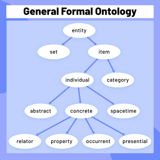
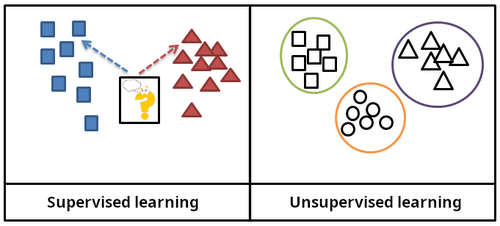
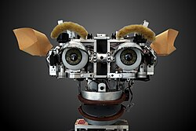
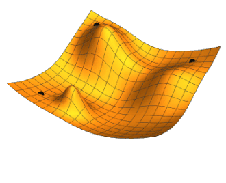
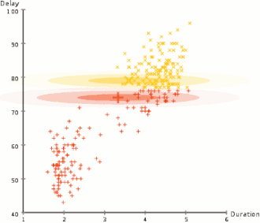
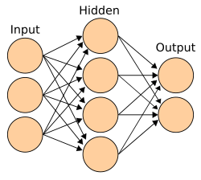

Artificial intelligence
| Part of a series on |
| Artificial intelligence (AI) |
|---|
| Glossary |
Artificial intelligence (AI) is the capability of computational systems to perform tasks typically associated with human intelligence, such as learning, reasoning, problem-solving, perception, and decision-making. It is a field of research in engineering, mathematics, and computer science that develops and studies methods and software that enable machines to perceive their environment and use learning and intelligence to take actions that maximise their chances of achieving defined goals.[1]
High-profile applications of AI include advanced web search engines, chatbots, virtual assistants, autonomous vehicles, play and analysis in strategy games (e.g., chess and Go), and content generation (e.g. images, audio, and videos).
The traditional goals of AI research include learning, reasoning, knowledge representation, planning, natural language processing, and perception, as well as support for robotics.[a] To reach these goals, AI researchers use techniques including state space search and mathematical optimisation, formal logic, artificial neural networks, and methods based on statistics, operations research, and economics.[b] AI also draws upon psychology, linguistics, philosophy, neuroscience, and other fields.[2] Some companies, such as OpenAI, Google DeepMind, and Meta, aim to create artificial general intelligence (AGI)—AI that can complete nearly any cognitive task at least as well as a human.[3]
Artificial intelligence was founded as an academic discipline in 1956.[4] The field went through multiple cycles of optimism throughout its history,[5][6] followed by periods of disappointment and loss of funding, known as AI winters.[7][8] Funding and interest increased substantially after 2012, when graphics processing units (GPUs) started being used to accelerate neural networks, and deep learning outperformed previous AI techniques.[9] This growth accelerated further after 2017 with the transformer architecture.[10] In the 2020s, an AI boom coincided with advances in generative AI, which became widespread and allowed for the creation and modification of media. In addition to AI safety and unintended consequences and harms from the use of AI, ethical concerns, AI's long-term effects, environmental effects,[11] and potential existential risks have prompted discussions of AI regulation.
Goals
The general problem of simulating (or creating) intelligence has been broken down into subproblems. These consist of specific traits or capabilities that researchers expect an intelligent system to display. The traits described below have received the most attention and cover the scope of AI research.[a]
Reasoning and problem-solving
Early researchers developed algorithms that imitated step-by-step reasoning that humans use when solving puzzles or making logical deductions.[12] By the late 1980s and 1990s, methods were developed for dealing with uncertain or incomplete information, employing concepts from probability and economics.[13]
Many of these algorithms were insufficient for solving large reasoning problems because they experienced a "combinatorial explosion", meaning they become exponentially slower as the problems grow.[14] Even humans rarely use the step-by-step deduction that early AI research could model. Humans solve most of their problems using fast, intuitive judgments.[15]
Reasoning models, a type of large language model (LLM) trained to generate intermediate chains-of-thought, emerged in 2024 and allowed improved performance on complex problems in mathematics and coding.[16] These models can produce incorrect outputs or "hallucinations," unlike symbolic reasoning systems.[17]
Knowledge representation

AI programs use knowledge to answer questions intelligently and make deductions about real-world facts.
Formal knowledge representation and knowledge engineering use symbols to represent words, concepts and things in the world.[18][c] A knowledge base is a body of knowledge represented in a form that can be used by a program. An ontology is the set of objects, relations, concepts, and properties used by a particular domain of knowledge.[24] Formal knowledge has been studied extensively since the 1970s and researchers have developed formalisms for a wide variety of difficult domains.[d]
The symbolic approach has difficulty with several problems: the breadth of commonsense knowledge (the set of atomic facts the average person knows is enormous),[30] the sub-symbolic form of most commonsense knowledge (much of what people know is not represented as "facts" or "statements" they can express verbally),[15] and knowledge acquisition (the problem of obtaining knowledge for AI applications).[e]
Large language models (and some other AI programs developed since 2012) do not require explicit, symbolic knowledge. They acquire knowledge by being trained on the combined text of millions of books and billions of websites. Modern AI can also learn about a domain by running experiments (as when AlphaZero learns game strategy by playing against itself). Machine learning solves the problems of general knowledge, commonsense knowledge and knowledge acquisition, however this approach has struggled with accurate recall and valid reasoning.[citation needed]
Planning and decision-making
An "agent" is any entity (artificial or not) that perceives and takes actions in the world. A rational agent has goals or preferences and takes actions to make them happen.[f][33] In automated planning, the agent has a specific goal.[34] In automated decision-making, the agent has preferences—there are some situations it would prefer to be in, and some situations it is trying to avoid. The decision-making agent assigns a number to each situation (called its "utility") that measures how much the agent prefers it. For each possible action, it can calculate the "expected utility": the utility of all possible outcomes of the action, weighted by the probability that the outcome will occur. It can then choose the action with the maximum expected utility.[35]
In classical planning, the agent knows exactly what the effect of any action will be.[36] In most real-world problems, however, the agent may not be certain about the situation it is in (it is "unknown" or "unobservable") and it may not know for certain what will happen after each possible action (it is not "deterministic"). It must choose an action by making a probabilistic guess and then reassess the situation to see if the action worked.[37]
Alongside thorough testing and improvement based on previous decisions, having an explanation for why the agent took certain decisions is a way to build trust, especially when the decisions have to be relied upon.[38]
In some problems, the agent's preferences may be uncertain, especially if there are other agents or humans involved. These preferences may be learned (e.g., with inverse reinforcement learning), or the agent can seek information to improve them.[39] Information value theory can be used to weigh the value of exploratory or experimental actions.[40] The space of possible future actions and situations is typically intractably large, so the agents must take actions and evaluate situations while being uncertain of the outcome.
A Markov decision process has a transition model that describes the probability that a particular action will change the state in a particular way and a reward function that supplies the utility of each state and the cost of each action. A policy associates a decision with each possible state. The policy could be calculated (e.g., by policy iteration), determined by a heuristic, or learned.[41]
Game theory describes the rational behaviour of multiple interacting agents and is used in AI programs that make decisions involving other agents.[42]
Learning
Machine learning is the study of programs that can improve their performance on a given task automatically.[43] It has been a part of AI from the beginning.[g]

There are several kinds of machine learning:
- Unsupervised learning analyses a stream of data, finds patterns, and makes predictions without any other guidance.[46]
- Supervised learning requires labelling the training data with the expected answers, and comes in two main varieties: classification (where the program must learn to predict what category the input belongs in) and regression (where the program must deduce a numeric function based on numeric input).[47]
- Reinforcement learning is when the agent is rewarded for good responses and punished for bad ones. The agent learns to choose responses that are classified as "good".[48]
- Transfer learning is when the knowledge gained from one problem is applied to a new problem.[49]
- Deep learning is a type of machine learning that runs inputs through biologically inspired artificial neural networks for all of these types of learning.[50]
Computational learning theory can assess learners by computational complexity, sample complexity (how much data is required), or other notions of optimisation.[51]
Natural language processing
Natural language processing (NLP) allows programs to read, write, and communicate in human languages.[52] Specific problems include speech recognition, speech synthesis, machine translation, information extraction, information retrieval, and question answering.[53]
Early work, based on Noam Chomsky's generative grammar and semantic networks, had difficulty with word-sense disambiguation[h] unless restricted to small domains called "micro-worlds" (due to the common sense knowledge problem[30]). British linguist and philosopher Margaret Masterman believed it was meaning and not grammar that was the key to understanding languages,[54] and that dictionaries and especially thesauri should be the basis of computational language structure.[55]
Modern deep learning techniques for NLP include word embedding (representing words, typically as vectors encoding their meaning),[56] transformers (a deep learning architecture using an attention mechanism),[57] and others.[58] In 2019, generative pre-trained transformer (or "GPT") language models began to generate coherent text.[59][60] By 2023, these models were able to get human-level scores on the bar exam, SAT (Scholastic Assessment Test), GRE (Graduate Record Examination), and many other real-world applications.[61]
Perception
Machine perception is the ability to use input from sensors (such as cameras, microphones, wireless signals, active lidar, sonar, radar, and tactile sensors) to deduce aspects of the world. Computer vision is the ability to analyse visual input.[62]
The field includes speech recognition,[63] image classification,[64] facial recognition, object recognition,[65] object tracking,[66] and robotic perception.[67]
Social intelligence

Affective computing is a field that comprises systems that recognise, interpret, process, or simulate human affect (feeling, emotion, and mood).[69] For example, some virtual assistants are programmed to speak conversationally or even banter humorously; it makes them appear more sensitive to the emotional dynamics of human interaction, or to otherwise facilitate human–computer interaction.
However, this tends to give naïve users an unrealistic conception of the intelligence of existing computer agents.[70] Moderate successes related to affective computing include textual sentiment analysis and, more recently, multimodal sentiment analysis, wherein AI classifies the effects displayed by a videotaped subject.[71]
General intelligence
A machine with artificial general intelligence (AGI) would be able to solve a wide variety of problems with breadth and versatility similar to human intelligence.[72]
Techniques
AI research uses a wide variety of techniques to accomplish the goals above.[b]
Search and optimisation
There are two different kinds of search used in AI: state space search and local search:
State space search
State space search searches through a tree of possible states to try to find a goal state.[73] For example, planning algorithms search through trees of goals and subgoals, attempting to find a path to a target goal, a process called means-ends analysis.[74]
Simple exhaustive searches[75] are rarely sufficient for most real-world problems: the search space (the number of places to search) quickly grows to astronomical numbers. The result is a search that is too slow or never completes.[14] "Heuristics" or "rules of thumb" can help prioritise choices that are more likely to reach a goal.[76]
Adversarial search is used for game-playing programs, such as chess or Go. It searches through a tree of possible moves and countermoves, looking for a winning position.[77]
Local search

Local search uses mathematical optimisation to find a solution to a problem. It begins with some form of guess and refines it incrementally.[78]
Gradient descent is a type of local search that optimises a set of numerical parameters by incrementally adjusting them to minimise a loss function. Variants of gradient descent are commonly used to train neural networks,[79] through the backpropagation algorithm.
Another type of local search is evolutionary computation, which aims to iteratively improve a set of candidate solutions by "mutating" and "recombining" them, selecting only the fittest to survive each generation.[80]
Distributed search processes can coordinate via swarm intelligence algorithms. Two popular swarm algorithms used in search are particle swarm optimisation (inspired by bird flocking) and art colony optimisation (inspired by ant trails).[81]
Logic
Formal logic is used for reasoning and knowledge representation.[82] Formal logic comes in two main forms: propositional logic (which operates on statements that are true or false and uses logical connectives such as "and", "or", "not" and "implies")[83] and predicate logic (which also operates on objects, predicates and relations and uses quantifiers such as "Every X is a Y" and "There are some Xs that are Ys").[84]
Deductive reasoning in logic is the process of proving a new statement (conclusion) from other statements that are given and assumed to be true (the premises).[85] Proofs can be structured as proof trees, in which nodes are labelled by sentences, and children nodes are connected to parent nodes by inference rules.
Given a problem and a set of premises, problem-solving reduces to searching for a proof tree whose root node is labelled by a solution of the problem and whose leaf nodes are labelled by premises or axioms. In the case of Horn clauses, problem-solving search can be performed by reasoning forwards from the premises or backwards from the problem.[86] In the more general case of the clausal form of first-order logic, resolution is a single, axiom-free rule of inference, in which a problem is solved by proving a contradiction from premises that include the negation of the problem to be solved.[87]
Inference in both Horn clause logic and first-order logic is undecidable, and therefore intractable. However, backward reasoning with Horn clauses, which underpins computation in the logic programming language Prolog, is Turing complete. Moreover, its efficiency is competitive with computation in other symbolic programming languages.[88]
Fuzzy logic assigns a "degree of truth" between 0 and 1. It can therefore handle propositions that are vague and partially true.[89]
Non-monotonic logics, including logic programming with negation as failure, are designed to handle default reasoning.[29] Other specialised versions of logic have been developed to describe many complex domains.
Probabilistic methods for uncertain reasoning
Many problems in AI (including reasoning, planning, learning, perception, and robotics) require the agent to operate with incomplete or uncertain information. AI researchers have devised a number of tools to solve these problems using methods from probability theory and economics.[90] Precise mathematical tools have been developed that analyse how an agent can make choices and plan, using decision theory, decision analysis,[91] and information value theory.[92] These tools include models such as Markov decision processes,[93] dynamic decision networks,[94] game theory and mechanism design.[95]
Bayesian networks[96] are a tool that can be used for reasoning (using the Bayesian inference algorithm),[i][98] learning (using the expectation–maximisation algorithm),[j][100] planning (using decision networks)[101] and perception (using dynamic Bayesian networks).[94]
Probabilistic algorithms can also be used for filtering, prediction, smoothing, and finding explanations for streams of data, thus helping perception systems analyse processes that occur over time (e.g., hidden Markov models or Kalman filters).[94]

Classifiers and statistical learning methods
The simplest AI applications can be divided into two types: classifiers (e.g., "if shiny then diamond"), on one hand, and controllers (e.g., "if diamond then pick up"), on the other hand. Classifiers[102] are functions that use pattern matching to determine the closest match. They can be fine-tuned based on chosen examples using supervised learning. Each pattern (also called an "observation") is labeled with a certain predefined class. All the observations combined with their class labels are known as a data set. When a new observation is received, that observation is classified based on previous experience.[47]
There are many kinds of classifiers in use.[103] The decision tree is the simplest and most widely used symbolic machine learning algorithm.[104] K-nearest neighbour algorithm was the most widely used analogical AI until the mid-1990s, and Kernel methods such as the support vector machine (SVM) displaced k-nearest neighbour in the 1990s.[105] The naive Bayes classifier is reportedly the "most widely used learner"[106] at Google, due in part to its scalability.[107] Neural networks are also used as classifiers.[108]
Artificial neural networks

An artificial neural network is based on a collection of nodes also known as artificial neurons, which loosely model the neurons in a biological brain. It is trained to recognise patterns; once trained, it can recognise those patterns in fresh data. There is an input, at least one hidden layer of nodes and an output. Each node applies a function and once the weight crosses its specified threshold, the data is transmitted to the next layer. A network is typically called a deep neural network if it has at least 2 hidden layers.[108]
Learning algorithms for neural networks use local search to choose the weights that will get the right output for each input during training. The most common training technique is the backpropagation algorithm.[109] Neural networks learn to model complex relationships between inputs and outputs and find patterns in data. In theory, a neural network can learn any function.[110]
In feedforward neural networks the signal passes in only one direction.[111] The term perceptron typically refers to a single-layer neural network.[112] In contrast, deep learning uses many layers.[113] Recurrent neural networks (RNNs) feed the output signal back into the input, which allows short-term memories of previous input events. Long short-term memory networks (LSTMs) are recurrent neural networks that better preserve longterm dependencies and are less sensitive to the vanishing gradient problem.[114] Convolutional neural networks (CNNs) use layers of kernels to more efficiently process local patterns. This local processing is especially important in image processing, where the early CNN layers typically identify simple local patterns such as edges and curves, with subsequent layers detecting more complex patterns like textures, and eventually whole objects.[115]
Deep learning

Deep learning uses several layers of neurons between the network's inputs and outputs.[113] The multiple layers can progressively extract higher-level features from the raw input. For example, in image processing, lower layers may identify edges, while higher layers may identify the concepts relevant to a human such as digits, letters, or faces.[117]
Deep learning has profoundly improved the performance of programs in many important subfields of artificial intelligence, including computer vision, speech recognition, natural language processing, image classification,[118] and others. The reason that deep learning performs so well in so many applications is not known as of 2021.[119] The sudden success of deep learning in 2012–2015 did not occur because of some new discovery or theoretical breakthrough (deep neural networks and backpropagation had been described by many people, as far back as the 1950s)[k] but because of two factors: the increase in computer power (including the hundred-fold increase in speed by switching to GPUs) and the availability of vast amounts of training data, especially the giant curated datasets used for benchmark testing, such as ImageNet.[l]
GPT
Generative pre-trained transformers (GPTs) are large language models (LLMs) that generate text based on the semantic relationships between words in sentences. Text-based GPT models are pre-trained on a large corpus of text that can be from the Internet. The pretraining consists of predicting the next token (a token being usually a word, subword, or punctuation). Throughout this pretraining, GPT models accumulate knowledge about the world and can then generate human-like text by repeatedly predicting the next token. Typically, a subsequent training phase makes the model more truthful, useful, and harmless, usually with a technique called reinforcement learning from human feedback (RLHF). Current GPT models are prone to generating falsehoods called "hallucinations". These can be reduced with RLHF and quality data, but the problem has been getting worse for reasoning systems.[127] Such systems are used in chatbots, which allow people to ask a question or request a task in simple text.[128][129]
Current models and services include ChatGPT, Claude, Gemini, Copilot, and Meta AI.[130] Multimodal GPT models can process different types of data (modalities) such as images, videos, sound, and text.[131]
Hardware and software

In the late 2010s, graphics processing units (GPUs) that were increasingly designed with AI-specific enhancements and used with specialised TensorFlow software had replaced previously used central processing unit (CPUs) as the dominant means for large-scale (commercial and academic) machine learning models' training.[132] Specialised programming languages such as Prolog were used in early AI research,[133] but general-purpose programming languages like Python have become predominant.[134]
The transistor density in integrated circuits has been observed to roughly double every 18 months—a trend known as Moore's law, named after the Intel co-founder Gordon Moore, who first identified it. Improvements in GPUs have been even faster,[135] a trend sometimes called Huang's law,[136] named after Nvidia co-founder and CEO Jensen Huang.
Applications

AI and machine learning technology is used in most of the essential applications of the 2020s, including:
- search engines (such as Google Search)
- targeting online advertisements
- recommendation systems (offered by Netflix, YouTube or Amazon) driving internet traffic
- targeted advertising (AdSense, Facebook)
- virtual assistants (such as Siri or Alexa)
- autonomous vehicles (including drones, ADAS and self-driving cars)
- automatic language translation (Microsoft Translator, Google Translate)
- facial recognition (Apple's FaceID or Facebook's DeepFace and Google's FaceNet)
- image labelling (used by Facebook, Apple's Photos and TikTok).
AI-assisted software development
Chatbots
Physical AI
Health and medicine
AlphaFold 2 (2021) demonstrated the ability to approximate, in hours rather than months, the 3D structure of a protein.[137] In 2023, it was reported that AI-guided drug discovery helped find a class of antibiotics capable of killing two different types of drug-resistant bacteria.[138] In 2024, researchers used machine learning to accelerate the search for Parkinson's disease drug treatments. Their aim was to identify compounds that block the clumping, or aggregation, of alpha-synuclein (the protein that characterises Parkinson's disease). They were able to speed up the initial screening process ten-fold and reduce the cost by a thousand-fold.[139][140]
AI is increasingly being used in medical diagnostics, including the detection of diseases such as lung cancer from medical imaging like CT scans. [141]
A 2026 Nature article titled "Dozens of AI disease-prediction models were trained on dubious data" highlighted the use of unreliable data being used to train AI medical prediction models for stroke and diabetes in 125 research articles. Evidence suggested some of the AI tools that were developed on unreliable data had been used on patients, although it was not clear if there were adverse outcomes.[142][143]
Gaming
Game playing programs have been used since the 1950s to demonstrate and test AI's most advanced techniques.[144] Deep Blue became the first computer chess-playing system to beat a reigning world chess champion, Garry Kasparov, on 11 May 1997.[145] In 2011, in a Jeopardy! quiz show exhibition match, IBM's question answering system, Watson, defeated the two greatest Jeopardy! champions, Brad Rutter and Ken Jennings, by a significant margin.[146] In March 2016, AlphaGo won 4 out of 5 games of Go in a match with Go champion Lee Sedol, becoming the first computer Go-playing system to beat a professional Go player without handicaps. Then, in 2017, it defeated Ke Jie, who was the best Go player in the world.[147] Other programs handle imperfect-information games, such as the poker-playing program Pluribus.[148] DeepMind developed increasingly generalistic reinforcement learning models, such as with MuZero, which could be trained to play chess, Go, or Atari games.[149] In 2019, DeepMind's AlphaStar achieved grandmaster level in StarCraft II, a particularly challenging real-time strategy game that involves incomplete knowledge of what happens on the map.[150] In 2021, an AI agent competed in a PlayStation Gran Turismo competition, winning against four of the world's best Gran Turismo drivers using deep reinforcement learning.[151] In 2024, Google DeepMind introduced SIMA, a type of AI capable of autonomously playing nine previously unseen open-world video games by observing screen output, as well as executing short, specific tasks in response to natural language instructions.[152]
Mathematics
In mathematics, probabilistic large language models are versatile, but can also produce wrong answers in the form of hallucinations. The Alibaba Group developed a version of its Qwen models called Qwen2-Math, that achieved state-of-the-art performance on several mathematical benchmarks, including 84% accuracy on the MATH dataset of competition mathematics problems.[153] In January 2025, Microsoft proposed the technique rStar-Math that leverages Monte Carlo tree search and step-by-step reasoning, enabling a relatively small language model like Qwen-7B to solve 53% of the AIME 2024 and 90% of the MATH benchmark problems.[154] Google DeepMind has developed models for solving mathematical problems: AlphaTensor, AlphaGeometry, AlphaProof, AlphaEvolve, and FunSearch.[155][156]
When natural language is used to describe mathematical problems, converters can transform such prompts into a formal language such as Lean to define mathematical tasks. The experimental model Gemini Deep Think accepts natural language prompts directly and achieved gold medal results in the International Math Olympiad of 2025.[157]
Topological deep learning integrates various topological approaches.
Finance
According to Nicolas Firzli, director of the World Pensions & Investments Forum, it may be too early to see the emergence of highly innovative AI-informed financial products and services. He argues that "the deployment of AI tools will simply further automatise things: destroying tens of thousands of jobs in banking, financial planning, and pension advice in the process, but I'm not sure it will unleash a new wave of [e.g., sophisticated] pension innovation."[158]
Military
Various countries are deploying AI military applications.[159] The main applications enhance command and control, communications, sensors, integration and interoperability.[160] Research is targeting intelligence collection and analysis, logistics, cyber operations, information operations, and semiautonomous and autonomous vehicles.[159] AI technologies enable coordination of sensors and effectors, threat detection and identification, marking of enemy positions, target acquisition, coordination and deconfliction of distributed Joint Fires between networked combat vehicles, both human-operated and autonomous.[160]
AI has been used in military operations in Iraq, Syria, Israel and Ukraine.[159][161][162][163]
Generative AI
Generative artificial intelligence (GenAI) is a subfield of artificial intelligence (AI) that uses generative models to generate text, images, videos, audio, software code or other forms of data.[164] These models learn the underlying patterns and structures of their training data, and use them to generate new data[165] in response to input, which often takes the form of natural language prompts.[166][167]
The prevalence of generative AI tools has increased significantly since the AI boom in the 2020s. This boom was made possible by improvements in deep neural networks, particularly large language models (LLMs), which are based on the transformer architecture. Generative AI applications include chatbots such as ChatGPT, Claude, Microsoft Copilot, DeepSeek, Doubao, Google Gemini, Grok, Kimi and Qwen; text-to-image models such as DALL-E, Firefly, Stable Diffusion, and Midjourney; and text-to-video models such as Veo, LTX and Sora.[168][169][170]
Companies in a variety of sectors have used generative AI, including those in software development, healthcare,[171] finance,[172] entertainment,[173] customer service,[174] sales and marketing,[175] art, writing,[176] and product design.[177]
Agents
AI agents are software entities designed to perceive their environment, make decisions, and take actions autonomously to achieve specific goals. These agents can interact with users, their environment, or other agents. AI agents are used in various applications, including virtual assistants, chatbots, autonomous vehicles, game-playing systems, and industrial robotics. AI agents operate within the constraints of their programming, available computational resources, and hardware limitations. This means they are restricted to performing tasks within their defined scope and have finite memory and processing capabilities. In real-world applications, AI agents often face time constraints for decision-making and action execution. Many AI agents incorporate learning algorithms, enabling them to improve their performance over time through experience or training. Using machine learning, AI agents can adapt to new situations and optimise their behaviour for their designated tasks.[178][179][180]
Web search
Microsoft introduced Copilot Search in February 2023 under the name Bing Chat. Copilot Search provides AI-generated summaries.[181]
Generative AI features added to Google Search include AI Overviews in May 2024[182] and AI Mode in May 2025.[183]
Sexuality
Applications of AI in this domain include AI-enabled menstruation and fertility trackers that analyse user data to offer predictions,[184] AI-integrated sex toys (e.g., teledildonics),[185] AI-generated sexual education content,[186] and AI agents that simulate sexual and romantic partners (e.g., Replika).[187] AI is also used for the production of non-consensual deepfake pornography, raising significant ethical and legal concerns.[188]
AI technologies have also been used to attempt to identify online gender-based violence and online sexual grooming of minors.[189][190]
Other industry-specific tasks
In a 2017 survey, one in five companies reported having incorporated "AI" in some offerings or processes.[191]
In the field of evacuation and disaster management, AI has been used to investigate patterns in large-scale and small-scale evacuations using historical data from GPS, videos or social media.[192][193][194]
During the 2024 Indian elections, US$50 million was spent on authorised AI-generated content, notably by creating deepfakes of allied (including sometimes deceased) politicians to better engage with voters, and by translating speeches to various local languages.[195]
The use of generative AI by law firms for legal research resulted in the creation of the global "AI Hallucination Cases" database, in April 2025, established by HEC Paris and Sciences Po legal data analysis lecturer Damien Charlotin.[196][197] By 2026, judges had issued sanctions and bar associations had issued warnings due to attorney submissions to the courts containing fabricated case law citations hallucinated by AI tools.[198]
Ethics
AI has potential benefits and potential risks.[199] AI may be able to advance science and find solutions for serious problems: Demis Hassabis of DeepMind hopes to "solve intelligence, and then use that to solve everything else".[200] However, as the use of AI has become widespread, several unintended consequences and risks have been identified.[201][202] In-production systems can sometimes not factor ethics and bias into their AI training processes, especially when the AI algorithms are inherently unexplainable in deep learning.[203]
Risks and harm
Privacy and copyright
Machine learning algorithms require large amounts of data. The techniques used to acquire this data have raised concerns about privacy, surveillance and copyright.
AI-powered devices and services, such as virtual assistants and IoT products, continuously collect personal information, raising concerns about intrusive data gathering and unauthorised access by third parties. The loss of privacy is further exacerbated by AI's ability to process and combine vast amounts of data, potentially leading to a surveillance society where individual activities are constantly monitored and analysed without adequate safeguards or transparency.
Sensitive user data collected may include online activity records, geolocation data, video, or audio.[204] For example, in order to build speech recognition algorithms, Amazon has recorded millions of private conversations and allowed temporary workers to listen to and transcribe some of them.[205] Opinions about this widespread surveillance range from those who see it as a necessary evil to those for whom it is clearly unethical and a violation of the right to privacy.[206]
AI developers argue that this is the only way to deliver valuable applications and have developed several techniques that attempt to preserve privacy while still obtaining the data, such as data aggregation, de-identification and differential privacy.[207] Since 2016, some privacy experts, such as Cynthia Dwork, have begun to view privacy in terms of fairness. Brian Christian wrote that experts have pivoted "from the question of 'what they know' to the question of 'what they're doing with it'."[208]
Generative AI is often trained on unlicensed copyrighted works, including in domains such as images or computer code; the output is then used under the rationale of "fair use". Experts disagree about how well and under what circumstances this rationale will hold up in courts of law; relevant factors may include "the purpose and character of the use of the copyrighted work" and "the effect upon the potential market for the copyrighted work".[209][210] Website owners can indicate that they do not want their content scraped via a "robots.txt" file.[211] However, some companies will scrape content regardless[212][213] because the robots.txt file has no real authority. In 2023, leading authors (including John Grisham and Jonathan Franzen) sued AI companies for using their work to train generative AI.[214][215] Another discussed approach is to envision a separate sui generis system of protection for creations generated by AI to ensure fair attribution and compensation for human authors.[216]
Dominance by tech giants
The commercial AI scene is dominated by Big Tech companies such as Alphabet Inc., Amazon, Apple Inc., Meta Platforms, and Microsoft.[217][218][219] Some of these players already own the vast majority of existing cloud infrastructure and computing power from data centres, allowing them to entrench further in the marketplace.[220][221]
For most of 2025-2026, AI-related companies have dominated stock market returns. Recently, investors have started questioning whether the enormous spending on AI infrastructure and data centers will generate sufficient profits, leading to increased volatility in technology and semiconductor stocks. [222]
Power needs and environmental impacts

Technology companies have built electricity and artificial intelligence infrastructure to facilitate the AI boom of the 2020s. A 2025 report from the consulting firm McKinsey & Company estimated that by 2030, $2.7 trillion would be invested into AI infrastructure and data centres in the US, surpassing World War II's Manhattan Project every month.[224]
In January 2024, the International Energy Agency (IEA) released Electricity 2024, Analysis and Forecast to 2026.[225] This is the first IEA report to make projections for data centres and power consumption by AI and cryptocurrency. The report states that power demand for these uses might double by 2026, with the additional power consumption equaling that of Japan.[226]
Power consumption by AI is responsible for an increase in fossil fuel use, and has delayed closings of obsolete, carbon-emitting coal energy facilities. A ChatGPT search involves 10 times as much electrical energy as a Google search.[227]
A 2024 Goldman Sachs research paper, AI Data Centers and the Coming US Power Demand Surge, found "US power demand (is) likely to experience growth not seen in a generation...." and forecasts that, by 2030, US data centres will consume 8% of US power, as opposed to 3% in 2022, presaging growth for the electrical power generation industry by a variety of means.[228] Data centres' need for more and more electrical power is such that they might max out the electrical grid. The Big Tech companies counter that AI can be used to maximise the utilisation of the grid by all.[229]
In 2024, The Wall Street Journal reported that big AI companies have begun negotiations with the US nuclear power providers to provide electricity to the data centres. In March 2024, Amazon purchased a Pennsylvania nuclear-powered data centre for US$650 million.[230]
In September 2024, Microsoft announced an agreement with Constellation Energy to re-open the Three Mile Island nuclear power plant to provide Microsoft with 100% of all electric power produced by the plant for 20 years. Reopening the plant, which suffered a partial nuclear meltdown of its Unit 2 reactor in 1979, will require Constellation to get through strict regulatory processes which will include extensive safety scrutiny from the US Nuclear Regulatory Commission. If approved (this will be the first ever US re-commissioning of a nuclear plant), over 835 megawatts of power – enough for 800,000 homes – will be produced. The cost for re-opening and upgrading is estimated at US$1.6 billion and is dependent on tax breaks for nuclear power contained in the 2022 US Inflation Reduction Act.[231] As of 2024, the US government and the state of Michigan have been investing almost US$2 billion to reopen the Palisades nuclear reactor on Lake Michigan. Closed since 2022, the plant was scheduled to be reopened in October 2025.[232]
After the last approval in September 2023, Taiwan suspended the approval of data centres north of Taoyuan with a capacity of more than 5 MW in 2024, due to power supply shortages.[233] Taiwan aims to phase out nuclear power by 2025.[233]
Singapore imposed a ban on the opening of data centres in 2019 due to electric power, but lifted it in 2022.[233]
Although most nuclear plants in Japan have been shut down after the 2011 Fukushima nuclear accident, according to an October 2024 Bloomberg article in Japanese, cloud gaming services company Ubitus, in which Nvidia has a stake, is looking for land in Japan near a nuclear power plant for a new data centre for generative AI.[234]
On 1 November 2024, the Federal Energy Regulatory Commission (FERC) rejected an application submitted by Talen Energy for approval to supply some electricity from the nuclear power station Susquehanna to Amazon's data centre.[235] According to the Commission Chairman Willie L. Phillips, it is a burden on the electricity grid as well as a significant cost-shifting concern to households and other business sectors.[235]
In 2025, a report prepared by the IEA estimated the greenhouse gas emissions from the energy consumption of AI at 180 million tons. By 2035, these emissions could rise to 300–500 million tonnes depending on what measures will be taken. This is below 1.5% of the energy sector emissions. The emissions reduction potential of AI was estimated at 5% of the energy sector emissions, but rebound effects (for example if people switch from public transport to autonomous cars) can reduce it.[236]
In June 2026, the United Nations University Institute for Water, Environment and Health released a report about cumulative environmental impacts of AI, not only carbon. The report found that AI has significant negative impacts on land, water, and climate, as it uses large amounts of electricity, requires mining of minerals, and generates large amounts of electronic waste. In 2025, data centres consumed more electricity than Saudi Arabia, and ChatGPT alone consumed an amount of water equivalent to the needs of 500,000 people in Sub-Saharan Africa. The negative impacts are not distributed equally across the planet but are concentrated in some places. Data centres are often built in places already suffering from water deficit. For example, AI deployment has already led to an increase in water scarcity in Mexico and Uruguay. It created problems with energy supply in Ireland, which forbade construction of new data centres near Dublin until 2028. Measures can involve tradeoffs, for example, transitioning from coal to bioenergy reduces carbon footprint but increases the impact on land and water. Energy efficiency might not reduce environmental impact, because as AI becomes more efficient, it also becomes cheaper and more widely used.[11]
Misinformation
YouTube, Facebook and others use recommender systems to guide users to more content. These AI programs were given the goal of maximising user engagement (that is, the only goal was to keep people watching). The AI learned that users tended to choose misinformation, conspiracy theories, and extreme partisan content, and, to keep them watching, the AI recommended more of it. Users also tended to watch more content on the same subject, so the AI led people into filter bubbles where they received multiple versions of the same misinformation.[237] This convinced many users that the misinformation was true, and ultimately undermined trust in institutions, the media and the government.[238] The AI program had correctly learned to maximise its goal, but the result was harmful to society. After the U.S. election in 2016, major technology companies took some steps to mitigate the problem.[239]
In the early 2020s, generative AI began to create images, audio, and texts that are virtually indistinguishable from real photographs, recordings, or human writing,[240] while realistic AI-generated videos became feasible in the mid-2020s.[241][242][243] It is possible for bad actors to use this technology to create massive amounts of misinformation and computational propaganda through techniques such as deepfakes.[244][245] AI pioneer and Nobel Prize-winning computer scientist Geoffrey Hinton expressed concern about AI enabling "authoritarian leaders to manipulate their electorates" on a large scale, among other risks.[246] The ability to influence electorates has been proved in at least one study. This same study shows more inaccurate statements from the models when they advocate for candidates of the political right.[247]
AI researchers at Microsoft, OpenAI, universities and other organisations have suggested using "personhood credentials" as a way to overcome online deception enabled by AI models.[248]
Algorithmic bias and fairness
Machine learning applications can be biased[m] if they learn from biased data.[250] The developers may not be aware that the bias exists.[251] Discriminatory behaviour by some LLMs can be observed in their output.[252] Bias can be introduced by the way training data is selected and by the way a model is deployed.[253][250] If a biased algorithm is used to make decisions that can seriously harm people (as it can in medicine, finance, recruitment, housing or policing) then the algorithm may cause discrimination.[254] The field of fairness studies how to prevent harms from algorithmic biases.
On 28 June 2015, Google Photos's new image labelling feature mistakenly identified Jacky Alcine and a friend as "gorillas" because they were black. The system was trained on a dataset that contained very few images of black people,[255] a problem called "sample size disparity".[256] Google "fixed" this problem by preventing the system from labelling anything as a "gorilla". Eight years later, in 2023, Google Photos still could not identify a gorilla, and neither could similar products from Apple, Facebook, Microsoft and Amazon.[257]
COMPAS is a commercial program widely used by U.S. courts to assess the likelihood of a defendant becoming a recidivist. In 2016, Julia Angwin at ProPublica discovered that COMPAS exhibited racial bias, despite the fact that the program was not told the races of the defendants. Although the error rate for both whites and blacks was calibrated equal at exactly 61%, the errors for each race were different—the system consistently overestimated the chance that a black person would re-offend and would underestimate the chance that a white person would not re-offend.[258] In 2017, several researchers[n] showed that it was mathematically impossible for COMPAS to accommodate all possible measures of fairness when the base rates of re-offence were different for whites and blacks in the data.[260]
A program can make biased decisions even if the data does not explicitly mention a problematic feature (such as "race" or "gender"). The feature will correlate with other features (like "address", "shopping history" or "first name"), and the program will make the same decisions based on these features as it would on "race" or "gender".[261] Moritz Hardt said "the most robust fact in this research area is that fairness through blindness doesn't work."[262]
Criticism of COMPAS highlighted that machine learning models are designed to make "predictions" that are only valid if we assume that the future will resemble the past. If they are trained on data that includes the results of racist decisions in the past, machine learning models must predict that racist decisions will be made in the future. If an application then uses these predictions as recommendations, some of these "recommendations" will likely be racist.[263] Thus, machine learning is not well suited to help make decisions in areas where there is hope that the future will be better than the past. It is descriptive rather than prescriptive.[o]
Bias and unfairness may go undetected because the developers are overwhelmingly white and male: among AI engineers, about 4% are black and 20% are women.[256]
There are various conflicting definitions and mathematical models of fairness. These notions depend on ethical assumptions, and are influenced by beliefs about society. One broad category is distributive fairness, which focuses on the outcomes, often identifying groups and seeking to compensate for statistical disparities. Representational fairness tries to ensure that AI systems do not reinforce negative stereotypes or render certain groups invisible. Procedural fairness focuses on the decision process rather than the outcome. The most relevant notions of fairness may depend on the context, notably the type of AI application and the stakeholders. The subjectivity in the notions of bias and fairness makes it difficult for companies to operationalise them. Having access to sensitive attributes such as race or gender is also considered by many AI ethicists to be necessary in order to compensate for biases, but it may conflict with anti-discrimination laws.[249]
At the 2022 ACM Conference on Fairness, Accountability, and Transparency a paper reported that a CLIP‑based (Contrastive Language-Image Pre-training) robotic system reproduced harmful gender‑ and race‑linked stereotypes in a simulated manipulation task. The authors recommended robot‑learning methods which physically manifest such harms be "paused, reworked, or even wound down when appropriate, until outcomes can be proven safe, effective, and just."[265][266][267]
Lack of transparency
Many AI systems are so complex that their designers cannot explain how they reach their decisions.[268] Particularly with deep neural networks, in which there are many non-linear relationships between inputs and outputs. But some popular explainability techniques exist.[269]
It is impossible to be certain that a program is operating correctly if no one knows how exactly it works. There have been many cases where a machine learning program passed rigorous tests, but nevertheless learned something different than what the programmers intended. For example, a system that could identify skin diseases better than medical professionals was found to actually have a strong tendency to classify images with a ruler as "cancerous", because pictures of malignancies typically include a ruler to show the scale.[270] Another machine learning system designed to help effectively allocate medical resources was found to classify patients with asthma as being at "low risk" of dying from pneumonia. Having asthma is actually a severe risk factor, but since the patients having asthma would usually get much more medical care, they were relatively unlikely to die according to the training data. The correlation between asthma and low risk of dying from pneumonia was real, but misleading.[271]
People who have been harmed by an algorithm's decision have a right to an explanation.[272] Doctors, for example, are expected to clearly and completely explain to their colleagues the reasoning behind any decision they make. Early drafts of the European Union's General Data Protection Regulation in 2016 included an explicit statement that this right exists.[p] Industry experts noted that this is an unsolved problem with no solution in sight. Regulators argued that nevertheless the harm is real: if the problem has no solution, the tools should not be used.[273]
DARPA established the XAI ("Explainable Artificial Intelligence") program in 2014 to try to solve these problems.[274]
Several approaches aim to address the transparency problem. SHAP enables to visualise the contribution of each feature to the output.[275] LIME can locally approximate a model's outputs with a simpler, interpretable model.[276] Multitask learning provides a large number of outputs in addition to the target classification. These other outputs can help developers deduce what the network has learned.[277] Deconvolution, DeepDream and other generative methods can allow developers to see what different layers of a deep network for computer vision have learned, and produce output that can suggest what the network is learning.[278] For generative pre-trained transformers, Anthropic developed a technique based on dictionary learning that associates patterns of neuron activations with human-understandable concepts.[279]
Bad actors and weaponised AI
Artificial intelligence provides a number of tools that are useful to bad actors, such as authoritarian governments, terrorists, criminals or rogue states.
A lethal autonomous weapon is a machine that locates, selects and engages human targets without human supervision.[q] Widely available AI tools can be used by bad actors to develop inexpensive autonomous weapons and, if produced at scale, they are potentially weapons of mass destruction.[281] Even when used in conventional warfare, they currently cannot reliably choose targets and could potentially kill an innocent person.[281] In 2014, 30 nations (including China) supported a ban on autonomous weapons under the United Nations' Convention on Certain Conventional Weapons, however the United States and others disagreed.[282] By 2015, over fifty countries were reported to be researching battlefield robots.[283]
AI tools make it easier for authoritarian governments to efficiently control their citizens in several ways. Face and voice recognition allow widespread surveillance. Machine learning, operating this data, can classify potential enemies of the state and prevent them from hiding. Recommendation systems can precisely target propaganda and misinformation for maximum effect. Deepfakes and generative AI aid in producing misinformation. Advanced AI can make authoritarian centralised decision-making more competitive than liberal and decentralised systems such as markets. It lowers the cost and difficulty of digital warfare and advanced spyware.[284] All these technologies have been available since 2020 or earlier—AI facial recognition systems are already being used for mass surveillance in China.[285][286]
There are many other ways in which AI is expected to help bad actors, some of which can not be foreseen. For example, machine-learning AI is able to design tens of thousands of toxic molecules in a matter of hours.[287]
Technological unemployment
Economists have frequently highlighted the risks of redundancies from AI, and speculated about unemployment if there is no adequate social policy for full employment.[288]
In the past, technology has tended to increase rather than reduce total employment, but economists acknowledge that "we're in uncharted territory" with AI.[289] A survey of economists showed disagreement about whether the increasing use of robots and AI will cause a substantial increase in long-term unemployment, but they generally agree that it could be a net benefit if productivity gains are redistributed.[290] Risk estimates vary; for example, in the 2010s, Michael Osborne and Carl Benedikt Frey estimated 47% of U.S. jobs are at "high risk" of potential automation, while an OECD report classified only 9% of U.S. jobs as "high risk".[r][292] The methodology of speculating about future employment levels has been criticised as lacking evidential foundation, and for implying that technology, rather than social policy, creates unemployment, as opposed to redundancies.[288] In April 2023, it was reported that 70% of the jobs for Chinese video game illustrators had been eliminated by generative artificial intelligence.[293][294] Early-career workers showed decreasing employment rates in some AI-exposed occupations.[295]
Unlike previous waves of automation, many middle-class jobs may be eliminated by artificial intelligence; The Economist stated in 2015 that "the worry that AI could do to white-collar jobs what steam power did to blue-collar ones during the Industrial Revolution" is "worth taking seriously".[296] Jobs at extreme risk range from paralegals to fast food cooks, while job demand is likely to increase for care-related professions ranging from personal healthcare to the clergy.[297] In July 2025, Ford CEO Jim Farley predicted that "artificial intelligence is going to replace literally half of all white-collar workers in the U.S."[298]
From the early days of the development of artificial intelligence, there have been arguments, for example, those put forward by Joseph Weizenbaum, who developed the ELIZA chatbot between 1964 and 1966, about whether tasks that can be done by computers actually should be done by them, given the difference between computers and humans, and between quantitative calculation and qualitative, value-based judgement.[299]
Substitution for human–human interaction
With the increase of loneliness in the early 21st century, AI is sometimes identified as a potential source of relief to this problem. It would be possible, via human-like qualities built into AI products,[300] for individuals to assume that this need can be met by artificial means.[301][302] In some cases, people approach artificial intelligence for companionship when they believe that they would not find acceptance due to feeling outcast.[303] Examples of harm coming to humans from advanced chatbots have been reported in courts in the United States, with AI companies accused of creating products that endanger humans through emotional confusion or deception.[304][305]
Existential risk
Recent public debates in artificial intelligence have increasingly focused on its broader societal and ethical implications. It has been argued AI will become so powerful that humanity may irreversibly lose control of it. This could, as physicist Stephen Hawking stated, "spell the end of the human race".[306] This scenario has been common in science fiction, when a computer or robot suddenly develops a human-like "self-awareness" (or "sentience" or "consciousness") and becomes a malevolent character.[s] These sci-fi scenarios are misleading in several ways.
First, AI does not require human-like sentience to be an existential risk. Modern AI programs are given specific goals and use learning and intelligence to achieve them. Philosopher Nick Bostrom argued that if one gives almost any goal to a sufficiently powerful AI, it may choose to destroy humanity to achieve it (he used the example of an automated paperclip factory that destroys the world to get more iron for paperclips).[308] Stuart Russell gives the example of household robot that tries to find a way to kill its owner to prevent it from being unplugged, reasoning that "you can't fetch the coffee if you're dead."[309] In order to be safe for humanity, a superintelligence would have to be genuinely aligned with humanity's morality and values so that it is "fundamentally on our side".[310]
Second, Yuval Noah Harari argues that AI does not require a robot body or physical control to pose an existential risk. The essential parts of civilisation are not physical. Things like ideologies, law, government, money and the economy are built on language; they exist because there are stories that billions of people believe. The current prevalence of misinformation suggests that an AI could use language to convince people to believe anything, even to take actions that are destructive.[311] Geoffrey Hinton said in 2025 that modern AI is particularly "good at persuasion" and getting better all the time. He asks, "Suppose you wanted to invade the capital of the US. Do you have to go there and do it yourself? No. You just have to be good at persuasion."[312]
The opinions amongst experts and industry insiders are mixed, with sizeable fractions both concerned and unconcerned by risk from eventual superintelligent AI.[313] Personalities such as Stephen Hawking, Bill Gates, and Elon Musk,[314] as well as AI pioneers such as Geoffrey Hinton, Yoshua Bengio, Stuart Russell, Demis Hassabis, and Sam Altman, have expressed concerns about existential risk from AI.
In May 2023, Geoffrey Hinton announced his resignation from Google in order to be able to "freely speak out about the risks of AI" without "considering how this impacts Google".[315] He notably mentioned risks of an AI takeover,[316] and stressed that in order to avoid the worst outcomes, establishing safety guidelines will require cooperation among those competing in use of AI.[317]
In 2023, many leading AI experts endorsed the joint statement that "Mitigating the risk of extinction from AI should be a global priority alongside other societal-scale risks such as pandemics and nuclear war".[318]
Some other researchers were more optimistic. AI pioneer Jürgen Schmidhuber did not sign the joint statement, emphasising that in 95% of all cases, AI research is about making "human lives longer and healthier and easier."[319] While the tools that are now being used to improve lives can also be used by bad actors, "they can also be used against the bad actors."[320][321] Andrew Ng also argued that "it's a mistake to fall for the doomsday hype on AI—and that regulators who do will only benefit vested interests."[322] Yann LeCun, a Turing Award winner, disagreed with the idea that AI will subordinate humans "simply because they are smarter, let alone destroy [us]",[323] "scoff[ing] at his peers' dystopian scenarios of supercharged misinformation and even, eventually, human extinction." In contrast, he claimed that "intelligent machines will usher in a new renaissance for humanity, a new era of enlightenment."[324] In the early 2010s, experts argued that the risks are too distant in the future to warrant research or that humans will be valuable from the perspective of a superintelligent machine.[325] However, after 2016, the study of current and future risks and possible solutions became a serious area of research.[326]
Ethical machines and alignment
Friendly AI are machines that have been designed from the beginning to minimise risks and to make choices that benefit humans. Eliezer Yudkowsky, who coined the term, argues that developing friendly AI should be a higher research priority: it may require a large investment and it must be completed before AI becomes an existential risk.[327]
Machines with intelligence have the potential to use their intelligence to make ethical decisions. The field of machine ethics provides machines with ethical principles and procedures for resolving ethical dilemmas.[328] The field of machine ethics is also called computational morality,[328] and was founded at an AAAI symposium in 2005.[329]
Other approaches include Wendell Wallach's "artificial moral agents"[330] and Stuart J. Russell's three principles for developing provably beneficial machines.[331]
Open source
Active organisations in the AI open-source community include Hugging Face,[332] Google,[333] EleutherAI and Meta.[334] Various AI models, such as Llama 2, Mistral or Stable Diffusion, have been made open-weight,[335][336] meaning that their architecture and trained parameters (the "weights") are publicly available. Open-weight models can be freely fine-tuned, which allows companies to specialise them with their own data and for their own use-case.[337] Open-weight models are useful for research and innovation but can also be misused. Since they can be fine-tuned, any built-in security measure, such as objecting to harmful requests, can be trained away until it becomes ineffective. Some researchers warn that future AI models may develop dangerous capabilities (such as the potential to drastically facilitate bioterrorism) and that once released on the Internet, they cannot be deleted everywhere if needed. They recommend pre-release audits and cost-benefit analyses.[338]
Frameworks
Artificial intelligence projects can be guided by ethical considerations during the design, development, and implementation of an AI system. An AI framework such as the Care and Act Framework, developed by the Alan Turing Institute and based on the SUM values, outlines four main ethical dimensions, defined as follows:[339][340]
- Respect the dignity of individual people
- Connect with other people sincerely, openly, and inclusively
- Care for the wellbeing of everyone
- Protect social values, justice, and the public interest
Other developments in ethical frameworks include those decided upon during the Asilomar Conference, the Montreal Declaration for Responsible AI, and the IEEE's Ethics of Autonomous Systems initiative, among others;[341] however, these principles are not without criticism, especially regarding the people chosen to contribute to these frameworks.[342]
Promotion of the wellbeing of the people and communities that these technologies affect requires consideration of the social and ethical implications at all stages of AI system design, development and implementation, and collaboration between job roles such as data scientists, product managers, data engineers, domain experts, and delivery managers.[343]
The UK AI Safety Institute released in 2024 a testing toolset called 'Inspect' for AI safety evaluations available under an MIT open-source licence which is freely available on GitHub and can be improved with third-party packages. It can be used to evaluate AI models in a range of areas including core knowledge, ability to reason, and autonomous capabilities.[344]
Regulation

The regulation of artificial intelligence is the development of public sector policies and laws for promoting and regulating AI; it is therefore related to the broader regulation of algorithms.[345] The regulatory and policy landscape for AI is an emerging issue in jurisdictions globally.[346] According to AI Index at Stanford, the annual number of AI-related laws passed in the 127 survey countries jumped from one passed in 2016 to 37 passed in 2022 alone.[347][348] Between 2016 and 2020, more than 30 countries adopted dedicated strategies for AI.[349] Most EU member states had released national AI strategies, as had Canada, China, India, Japan, Mauritius, the Russian Federation, Saudi Arabia, United Arab Emirates, U.S., and Vietnam. Others were in the process of elaborating their own AI strategy, including Bangladesh, Malaysia and Tunisia.[349] The Global Partnership on Artificial Intelligence was launched in June 2020, stating a need for AI to be developed in accordance with human rights and democratic values, to ensure public confidence and trust in the technology.[349] Henry Kissinger, Eric Schmidt, and Daniel Huttenlocher published a joint statement in November 2021 calling for a government commission to regulate AI.[350] In 2023, OpenAI leaders published recommendations for the governance of superintelligence, which they believe may happen in less than 10 years.[351] In 2023, the United Nations also launched an advisory body to provide recommendations on AI governance; the body comprises technology company executives, government officials and academics.[352] On 1 August 2024, the EU Artificial Intelligence Act entered into force, establishing the first comprehensive EU-wide AI regulation.[353] In 2024, the Council of Europe created the first international legally binding treaty on AI, called the "Framework Convention on Artificial Intelligence and Human Rights, Democracy and the Rule of Law". It was adopted by the European Union, the United States, the United Kingdom, and other signatories.[354]
In a 2022 Ipsos survey, attitudes towards AI varied greatly by country; 78% of Chinese citizens, but only 35% of Americans, agreed that "products and services using AI have more benefits than drawbacks".[347] A 2023 Reuters/Ipsos poll found that 61% of Americans agree, and 22% disagree, that AI poses risks to humanity.[355] In a 2023 Fox News poll, 35% of Americans thought it "very important", and an additional 41% thought it "somewhat important", for the federal government to regulate AI, versus 13% responding "not very important" and 8% responding "not at all important".[356][357] A 2026 NBC News Decision Desk poll powered by SurveyMonkey found that 52% of American adults used AI tools very often or sometimes, but only 18% said they could trust AI-generated information most or almost all of the time, and 70% were more worried than excited about AI.[358]
In November 2023, the first global AI Safety Summit was held in Bletchley Park in the UK to discuss the near and far term risks of AI and the possibility of mandatory and voluntary regulatory frameworks.[359] 28 countries including the United States, China, and the European Union issued a declaration at the start of the summit, calling for international co-operation to manage the challenges and risks of artificial intelligence.[360][361] In May 2024 at the AI Seoul Summit, 16 global AI tech companies agreed to safety commitments on the development of AI.[362][363]
In March 2026, the United Nations convened the inaugural meeting of the Independent International Scientific Panel on AI, a 40-member expert body established under the Global Digital Compact to produce annual evidence-based reports on AI's societal impacts.[364]
History

The study of mechanical or "formal" reasoning began with philosophers and mathematicians in antiquity. The study of logic led directly to Alan Turing's theory of computation, which suggested that a machine, by shuffling symbols as simple as "0" and "1", could simulate any conceivable form of mathematical reasoning.[366][367] This, along with concurrent discoveries in cybernetics, information theory and neurobiology, led researchers to consider the possibility of building an "electronic brain".[t] They developed several areas of research that would become part of AI,[369] such as McCulloch and Pitts design for "artificial neurons" in 1943,[120] and Turing's influential 1950 paper 'Computing Machinery and Intelligence', which introduced the Turing test and showed that "machine intelligence" was plausible.[370][367]
The field of AI research was founded at a workshop at Dartmouth College in 1956.[u][4] The first AI program, Logic Theorist, was presented at the workshop, created by future Turing Award winner Allen Newell and future Nobel Laureate Herbert A. Simon, in collaboration with J. C. Shaw. Many of the workshop attendees became the leaders of AI research in the 1960s.[v] They and their students produced programs that the press described as "astonishing":[w] computers were learning checkers strategies, solving word problems in algebra, proving logical theorems and speaking English.[x][5] Artificial intelligence laboratories were set up at a number of British and U.S. universities in the latter 1950s and early 1960s.[367]
Researchers in the 1960s and the 1970s were convinced that their methods would eventually succeed in creating a machine with general intelligence and considered this the goal of their field.[374] In 1965 Herbert Simon predicted, "machines will be capable, within twenty years, of doing any work a man can do".[375]In 1967 Marvin Minsky agreed, writing that "within a generation ... the problem of creating 'artificial intelligence' will substantially be solved".[376] They had, however, underestimated the difficulty of the problem.[y] In 1974, both the U.S. and British governments cut off exploratory research in response to the criticism of Sir James Lighthill[378] and ongoing pressure from the U.S. Congress to fund more productive projects.[379] Minsky and Papert's book Perceptrons was understood as proving that artificial neural networks would never be useful for solving real-world tasks, thus discrediting the approach altogether.[380] The "AI winter", a period when obtaining funding for AI projects was difficult, followed.[7]
In the early 1980s, AI research was revived by the commercial success of expert systems,[381] a form of AI program that simulated the knowledge and analytical skills of human experts. By 1985, the market for AI had reached over a billion dollars. At the same time, Japan's fifth generation computer project inspired the U.S. and British governments to restore funding for academic research.[6] However, beginning with the collapse of the Lisp Machine market in 1987, AI once again fell into disrepute, and a second, longer-lasting winter began.[8]
Up to this point, most of AI's funding had gone to projects that used high-level symbols to represent mental objects like plans, goals, beliefs, and known facts. In the 1980s, some researchers began to doubt that this approach would be able to imitate all the processes of human cognition, especially perception, robotics, learning and pattern recognition,[382] and began to look into "sub-symbolic" approaches.[383] Rodney Brooks rejected "representation" in general and focussed directly on engineering machines that move and survive.[z] Judea Pearl, Lotfi Zadeh, and others developed methods that handled incomplete and uncertain information by making reasonable guesses rather than precise logic.[90][388] But the most important development was the revival of "connectionism", including neural network research, by Geoffrey Hinton and others.[389] In 1990, Yann LeCun successfully showed that convolutional neural networks can recognise handwritten digits, the first of many successful applications of neural networks.[390]
AI gradually restored its reputation in the late 1990s and early 21st century by exploiting formal mathematical methods and by finding specific solutions to specific problems. This "narrow" and "formal" focus allowed researchers to produce verifiable results and collaborate with other fields (such as statistics, economics and mathematics).[391] By 2000, solutions developed by AI researchers were being widely used, although in the 1990s they were rarely described as "artificial intelligence" (a tendency known as the AI effect).[392] However, several academic researchers became concerned that AI was no longer pursuing its original goal of creating versatile, fully intelligent machines. Beginning around 2002, they founded the subfield of artificial general intelligence (or "AGI"), which had several well-funded institutions by the 2010s.[72]
Deep learning began to dominate industry benchmarks in 2012 and was adopted throughout the field.[9] For many specific tasks, other methods were abandoned.[aa] Deep learning's success was based on both hardware improvements (faster computers,[394] graphics processing units, cloud computing[395]) and access to large amounts of data[396] (including curated datasets,[395] such as ImageNet). Neural-network approaches also advanced natural language processing. In 2013, word2vec introduced efficient methods for learning distributed word representations.[397] In 2014–2015, sequence-to-sequence and attention mechanisms advanced neural machine translation.[398]
Deep learning's success led to an enormous increase in interest and funding in AI.[ab] The amount of machine learning research (measured by total publications) increased by 50% in the years 2015–2019.[349]
_on_Google_Trends.svg)
In 2016, issues of fairness and the misuse of technology were catapulted into centre stage at machine learning conferences, publications vastly increased, funding became available, and many researchers re-focussed their careers on these issues. The alignment problem became a serious field of academic study.[326]
In 2015, AlphaGo, developed by DeepMind, beat the world champion Go player. The program taught only the game's rules and developed a strategy by itself. GPT-3 is a large language model that was released in 2020 by OpenAI and is capable of generating high-quality human-like text.[399] ChatGPT, launched on 30 November 2022, became the fastest-growing consumer software application in history, gaining over 100 million users in two months.[400] It marked what is widely regarded as AI's breakout year, bringing it into the public consciousness.[401] These programs, and others, inspired an aggressive AI boom, where large companies began investing billions of dollars in AI research. According to AI Impacts, about US$50 billion annually was invested in "AI" around 2022 in the U.S. alone and about 20% of the new U.S. computer science PhD graduates have specialised in "AI".[402] About 800,000 "AI"-related U.S. job openings existed in 2022.[403] According to PitchBook research, 22% of newly funded startups in 2024 claimed to be AI companies.[404]
Philosophy
Philosophical debates have historically sought to determine the nature of intelligence and how to make intelligent machines.[405] Another major focus has been whether machines can be conscious, and the associated ethical implications.[406] Many other topics in philosophy are relevant to AI, such as epistemology and free will.[407] Rapid advancements have intensified public discussions on the philosophy and ethics of AI.[406]
Defining artificial intelligence
Alan Turing investigated whether machines can show intelligent behaviour and think. In 1950, he proposed the Turing test, which measures the ability of a machine to simulate human conversation.[408][370] Since we can only observe the behaviour of the machine, it does not matter if it is "actually" thinking or literally has a "mind". Turing notes that we can not determine these things about other people but "it is usual to have a polite convention that everyone thinks."[409]

Russell and Norvig agree with Turing that intelligence must be defined in terms of external behaviour, not internal structure.[1] However, they are critical that the test requires the machine to imitate humans. "Aeronautical engineering texts", they wrote, "do not define the goal of their field as making 'machines that fly so exactly like pigeons that they can fool other pigeons.'"[411] AI founder John McCarthy agreed, writing that "Artificial intelligence is not, by definition, simulation of human intelligence".[412]
McCarthy defines intelligence as "the computational part of the ability to achieve goals in the world".[413] Another AI founder, Marvin Minsky, similarly describes it as "the ability to solve hard problems".[414] Artificial Intelligence: A Modern Approach defines it as the study of agents that perceive their environment and take actions that maximise their chances of achieving defined goals.[1]
The many differing definitions of AI have been critically analysed.[415][416][417] During the 2020s AI boom, the term has been used as a marketing buzzword to promote products and services which do not use AI.[418]
Legal definitions
The International Organization for Standardization describes an AI system as a "an engineered system that generates outputs such as content, forecasts, recommendations, or decisions for a given set of human‑defined objectives, and can operate with varying levels of automation".[419] The EU AI Act defines an AI system as "a machine-based system that is designed to operate with varying levels of autonomy and that may exhibit adaptiveness after deployment, and that, for explicit or implicit objectives, infers, from the input it receives, how to generate outputs such as predictions, content, recommendations, or decisions that can influence physical or virtual environments".[420] In the United States, influential but non‑binding guidance such as the National Institute of Standards and Technology's AI Risk Management Framework describes an AI system as "an engineered or machine-based system that can, for a given set of objectives, generate outputs such as predictions, recommendations, or decisions influencing real or virtual environments. AI systems are designed to operate with varying levels of autonomy".[421]
Evaluating approaches to AI
No established unifying theory or paradigm has guided AI research for most of its history.[ac] The unprecedented success of statistical machine learning in the 2010s eclipsed all other approaches (so much so that some sources, especially in the business world, use the term "artificial intelligence" to mean "machine learning with neural networks"). This approach is mostly sub-symbolic, soft and narrow.
Symbolic AI and its limits
Symbolic AI (or "GOFAI")[423] simulated the high-level conscious reasoning that people use when they solve puzzles, express legal reasoning and do mathematics. It was highly successful at some "intelligent" tasks such as algebra or IQ tests. In 1976, Newell and Simon proposed the physical symbol systems hypothesis: "A physical symbol system has the necessary and sufficient means of general intelligent action."[424]
However, the symbolic approach failed on many tasks that humans solve easily, such as learning, recognising an object or commonsense reasoning. Moravec's paradox is the discovery that high-level "intelligent" tasks were easy for AI, but low level "instinctive" tasks were extremely difficult.[425] Philosopher Hubert Dreyfus had argued since the 1960s that human expertise depends on embodied, situational know-how that is not representable as explicit symbolic rules rather than conscious symbol manipulation, and on having a "feel" for the situation, rather than explicit symbolic knowledge.[426] Although his arguments had been ridiculed and ignored when they were first presented, eventually, AI research came to agree with him.[ad][15]
The issue is not resolved: sub-symbolic reasoning can make many of the same inscrutable mistakes that human intuition does, such as algorithmic bias. Critics such as Noam Chomsky argue continuing research into symbolic AI will still be necessary to attain general intelligence,[428][429] in part because sub-symbolic AI is a move away from explainable AI: it can be difficult or impossible to understand why a modern statistical AI program made a particular decision. The emerging field of neuro-symbolic artificial intelligence attempts to bridge the two approaches.
Neat vs. scruffy
"Neats" hope that intelligent behaviour is described using simple, elegant principles (such as logic or optimisation). "Scruffies" expect that it necessarily requires solving a large number of unrelated problems. Neats defend their programs with theoretical rigour, scruffies rely mainly on incremental testing to see if they work. This issue was actively discussed in the 1970s and 1980s.[430] The rise of deep learning may represent a shift toward the scruffies.[431]
Soft vs. hard computing
Finding a provably correct or optimal solution is intractable for many important problems.[14] Soft computing is a set of techniques, including genetic algorithms, fuzzy logic and neural networks, that are tolerant of imprecision, uncertainty, partial truth and approximation. Soft computing was introduced in the late 1980s and most successful AI programs in the 21st century are examples of soft computing with neural networks.
Narrow vs. general AI
AI researchers are divided as to whether to pursue the goals of artificial general intelligence and superintelligence directly or to solve as many specific problems as possible (narrow AI) in hopes these solutions will lead indirectly to the field's long-term goals.[432][433] General intelligence is difficult to define and difficult to measure, and modern AI has had more verifiable successes by focusing on specific problems with specific solutions. The sub-field of artificial general intelligence studies this area exclusively.
Machine consciousness, sentience, and mind
There is no settled consensus in philosophy of mind on whether a machine can have a mind, consciousness or subjective experiences in the same sense that human beings do. This issue considers the internal experiences of the machine, rather than its external behaviour. Mainstream AI research considers this issue irrelevant because it does not affect the goals of the field: to build machines that can solve problems using intelligence. Russell and Norvig add that "[t]he additional project of making a machine conscious in exactly the way humans are is not one that we are equipped to take on."[434] However, the question has become central to the philosophy of mind. It is also typically the central question at issue in artificial intelligence in fiction.
Consciousness
David Chalmers identified two problems in understanding the mind, which he named the "hard" and "easy" problems of consciousness.[435] The easy problem is understanding how the brain processes signals, makes plans and controls behaviour. The hard problem is explaining how this feels or why it should feel like anything at all, assuming we are right in thinking that it truly does feel like something (Dennett's consciousness illusionism says this is an illusion). While human information processing is easy to explain, human subjective experience is difficult to explain. For example, it is easy to imagine a colour-blind person who has learned to identify which objects in their field of view are red, but it is not clear what would be required for the person to know what red looks like.[436]
Computationalism and functionalism
Computationalism is the position in the philosophy of mind that the human mind is an information processing system and that thinking is a form of computing. Computationalism argues that the relationship between mind and body is similar or identical to the relationship between software and hardware and thus may be a solution to the mind–body problem. This philosophical position was inspired by the work of AI researchers and cognitive scientists in the 1960s and was originally proposed by philosophers Jerry Fodor and Hilary Putnam.[437]
Philosopher John Searle characterised this position as "strong AI": "The appropriately programmed computer with the right inputs and outputs would thereby have a mind in exactly the same sense human beings have minds."[ae] Searle challenges this claim with his Chinese room argument, which attempts to show that even a computer capable of perfectly simulating human behaviour would not have a mind.[441]
AI welfare and rights
It is difficult or impossible to reliably evaluate whether an advanced AI is sentient (has the ability to feel), and if so, to what degree.[442] But if there is a significant chance that a given machine can feel and suffer, then it may be entitled to certain rights or welfare protection measures, similarly to animals.[443][444] Sapience (a set of capacities related to high intelligence, such as discernment or self-awareness) may provide another moral basis for AI rights.[443] Robot rights are also sometimes proposed as a practical way to integrate autonomous agents into society.[445]
In 2017, the European Union considered granting "electronic personhood" to some of the most capable AI systems. Similarly to the legal status of companies, it would have conferred rights but also responsibilities.[446] Critics argued in 2018 that granting rights to AI systems would downplay the importance of human rights, and that legislation should focus on user needs rather than speculative futuristic scenarios. They also noted that robots lacked the autonomy to take part in society on their own.[447][448]
Progress in AI increased interest in the topic. Proponents of AI welfare and rights often argue that AI sentience, if it emerges, would be particularly easy to deny. They warn that this may be a moral blind spot analogous to slavery or factory farming, which could lead to large-scale suffering if sentient AI is created and carelessly exploited.[444][443]
Future
Superintelligence and the singularity
A superintelligence is a hypothetical agent that would possess intelligence far surpassing that of the brightest and most gifted human mind.[433] If research into artificial general intelligence produced sufficiently intelligent software, it might be able to reprogram and improve itself. The improved software would be even better at improving itself, leading to what I. J. Good called an "intelligence explosion" and Vernor Vinge called a "singularity".[449]
In Artificial Intelligence: A Modern Approach, Russel and Norvig cast doubt on the possibility of a singularity, arguing that "so far, every technology has followed an S-shaped curve", and that "sometimes it is not possible to keep the growth going."[450]
Transhumanism
Robot designer Hans Moravec, cyberneticist Kevin Warwick and inventor Ray Kurzweil have predicted that humans and machines may merge in the future into cyborgs that are more capable and powerful than either. This idea, called transhumanism, has roots in the writings of Aldous Huxley and Robert Ettinger.[451]
Edward Fredkin argues that "artificial intelligence is the next step in evolution", an idea first proposed by Samuel Butler's "Darwin among the Machines" as far back as 1863, and expanded upon by George Dyson in his 1998 book Darwin Among the Machines: The Evolution of Global Intelligence.[452]
In fiction

Thought-capable artificial beings have appeared as storytelling devices since antiquity,[453] and have been a persistent theme in science fiction.[454]
A common trope in these works began with Mary Shelley's Frankenstein, where a human creation becomes a threat to its masters. This includes such works as Arthur C. Clarke's and Stanley Kubrick's 2001: A Space Odyssey (both 1968), with HAL 9000, the murderous computer in charge of the Discovery One spaceship, as well as Blade Runner (1982), The Terminator (1984) and The Matrix (1999). In contrast, the rare loyal robots such as Gort from The Day the Earth Stood Still (1951) and Bishop from Aliens (1986) are less prominent in popular culture.[455]
Isaac Asimov introduced the Three Laws of Robotics in many stories, most notably with the "Multivac" super-intelligent computer. Asimov's laws are often brought up during lay discussions of machine ethics;[456] while almost all artificial intelligence researchers are familiar with Asimov's laws through popular culture, they generally consider the laws useless for many reasons, one of which is their ambiguity.[457]
Several works use AI to force us to confront the fundamental question of what makes us human, showing us artificial beings that have the ability to feel, and thus to suffer. This appears in Karel Čapek's R.U.R., the films A.I. Artificial Intelligence and Ex Machina, as well as the novel Do Androids Dream of Electric Sheep?, by Philip K. Dick. Dick considers the idea that our understanding of human subjectivity is altered by technology created with artificial intelligence.[458]
See also
- Artificial consciousness – Hypothetical consciousness in artificial systems
- Artificial intelligence and elections
- Artificial intelligence content detection – Software to detect AI-generated content
- Artificial intelligence in Wikimedia projects – Use of artificial intelligence to develop Wikipedia and other Wikimedia projects
- Association for the Advancement of Artificial Intelligence (AAAI)
- Behavior selection algorithm – Algorithm that selects actions for intelligent agents
- Business process automation – Automation of business processes
- Case-based reasoning – Process of solving new problems based on the solutions of similar past problems
- Computational intelligence – Computer system simulating intelligence
- Digital immortality – Hypothetical concept of storing a personality in digital form
- Emergent algorithm – Algorithm exhibiting emergent behavior
- Female gendering of AI technologies – Gender biases in digital technology
- Glossary of artificial intelligence – List of concepts in artificial intelligence
- Intelligence amplification – Use of information technology to augment human intelligence
- Intelligent agent – Software agent which acts autonomously
- Intelligent automation – Software process that combines robotic process automation and artificial intelligence
- List of artificial intelligence books
- List of artificial intelligence algorithms
- List of artificial intelligence companies
- List of artificial intelligence institutions
- List of artificial intelligence journals
- List of artificial intelligence projects
- List of university artificial intelligence research centers
- Lists of open-source artificial intelligence software
- List of proprietary artificial intelligence software
- List of robotics software
- Mind uploading – Hypothetical process of digitally emulating a brain
- Organoid intelligence – Use of brain cells and brain organoids for intelligent computing
- Outline of deep learning
- Outline of machine learning
- Pseudorandomness – Appearing random but actually being generated by a deterministic, causal process
- Robotic process automation – Form of business process automation technology
- The Last Day – 1967 Welsh science fiction novel
- Wetware computer – Computer composed of organic material
Explanatory notes
- 1 2 This list of intelligent traits is based on the topics covered by the major AI textbooks, including: Russell & Norvig (2021), Luger & Stubblefield (2004), Poole, Mackworth & Goebel (1998) and Nilsson (1998).
- 1 2 This list of tools is based on the topics covered by the major AI textbooks, including: Russell & Norvig (2021), Luger & Stubblefield (2004), Poole, Mackworth & Goebel (1998) and Nilsson (1998).
- ↑ Formal knowledge representations are used in content-based indexing and retrieval,[19] scene interpretation,[20] clinical decision support,[21] knowledge discovery (mining "interesting" and actionable inferences from large databases),[22] and other areas.[23]
- ↑ A complete formal knowledge base needs to represent things such as objects, properties, categories, and relations between objects;[25] situations, events, states, and time;[26] causes and effects;[27] knowledge about knowledge (what we know about what other people know);[28] default reasoning (things humans assume are true until they are told differently and will remain true even when other facts are changing);[29] and many other aspects and domains of knowledge.
- ↑ Knowledge acquistion is among the reasons that expert systems proved to be inefficient for capturing knowledge.[31][32]
- ↑ "Rational agent" is general term used in economics, philosophy and theoretical artificial intelligence. It can refer to anything that directs its behaviour to accomplish goals, such as a person, an animal, a corporation, a nation, or in the case of AI, a computer program.
- ↑ Alan Turing discussed the centrality of learning as early as 1950, in his classic paper "Computing Machinery and Intelligence".[44] In 1956, at the original Dartmouth AI summer conference, Ray Solomonoff wrote a report on unsupervised probabilistic machine learning: "An Inductive Inference Machine".[45]
- ↑ See AI winter § Machine translation and the ALPAC report of 1966.
- ↑ Compared with symbolic logic, formal Bayesian inference is computationally expensive. For inference to be tractable, most observations must be conditionally independent of one another. AdSense uses a Bayesian network with over 300 million edges to learn which ads to serve.[97]
- ↑ Expectation–maximisation, one of the most popular algorithms in machine learning, allows clustering in the presence of unknown latent variables.[99]
- ↑ Some form of deep neural networks (without a specific learning algorithm) were described by: Warren S. McCulloch and Walter Pitts (1943);[120] Alan Turing (1948);[121] Karl Steinbuch and Roger David Joseph (1961).[122] Deep or recurrent networks that learned (or used gradient descent) were developed by: Frank Rosenblatt (1957);[121] Oliver Selfridge (1959);[122] Alexey Ivakhnenko and Valentin Lapa (1965);[123] Kaoru Nakano (1971);[124] Shun-Ichi Amari (1972); [124] and John Joseph Hopfield (1982).[124] Precursors to backpropagation were developed by: Henry J. Kelley (1960);[121] Arthur E. Bryson (1962);[121] Stuart Dreyfus (1962);[121] Arthur E. Bryson and Yu-Chi Ho (1969).[121] Backpropagation was independently developed by: Seppo Linnainmaa (1970);[125] and Paul Werbos (1974).[121]
- ↑ Geoffrey Hinton said, of his work on neural networks in the 1990s, "our labeled datasets were thousands of times too small. [And] our computers were millions of times too slow."[126]
- ↑ In statistics, a bias is a systematic error or deviation from the correct value. But in the context of fairness, it refers to a tendency in favour or against a certain group or individual characteristic, usually in a way that is considered unfair or harmful. A statistically unbiased AI system that produces disparate outcomes for different demographic groups may thus be viewed as biased in the ethical sense.[249]
- ↑ Including Jon Kleinberg (Cornell University), Sendhil Mullainathan (University of Chicago), Cynthia Chouldechova (Carnegie Mellon) and Sam Corbett-Davis (Stanford)[259]
- ↑ Moritz Hardt (a director at the Max Planck Institute for Intelligent Systems) argues that machine learning "is fundamentally the wrong tool for a lot of domains, where you're trying to design interventions and mechanisms that change the world."[264]
- ↑ When the law was passed in 2018, it still contained a form of this provision.
- ↑ This is the United Nations' definition, and includes things like land mines as well.[280]
- ↑ See table 4; 9% is both the OECD average and the U.S. average.[291]
- ↑ Sometimes called a "robopocalypse"[307]
- ↑ "Electronic brain" was the term used by the press around this time.[366][368]
- ↑ Daniel Crevier wrote, "the conference is generally recognized as the official birthdate of the new science."[371] Russell and Norvig called the conference "the inception of artificial intelligence."[120]
- ↑ Russell and Norvig wrote "for the next 20 years the field would be dominated by these people and their students."[372]
- ↑ Russell and Norvig wrote, "it was astonishing whenever a computer did anything kind of smartish".[373]
- ↑ The programs described are Arthur Samuel's checkers program for the IBM 701, Daniel Bobrow's STUDENT, Newell and Simon's Logic Theorist and Terry Winograd's SHRDLU.
- ↑ Russell and Norvig wrote: "in almost all cases, these early systems failed on more difficult problems".[377]
- ↑ Embodied approaches to AI[384] were championed by Hans Moravec[385] and Rodney Brooks[386] and went by many names: Nouvelle AI.[386] Developmental robotics.[387]
- ↑ Matteo Wong wrote in The Atlantic: "Whereas for decades, computer-science fields such as natural-language processing, computer vision, and robotics used extremely different methods, now they all use a programming method called "deep learning". As a result, their code and approaches have become more similar, and their models are easier to integrate into one another."[393]
- ↑ Jack Clark wrote in Bloomberg: "After a half-decade of quiet breakthroughs in artificial intelligence, 2015 has been a landmark year. Computers are smarter and learning faster than ever", and noted that the number of software projects that use machine learning at Google increased from a "sporadic usage" in 2012 to more than 2,700 projects in 2015.[395]
- ↑ Nils Nilsson wrote in 1983: "Simply put, there is wide disagreement in the field about what AI is all about."[422]
- ↑ Daniel Crevier wrote that "time has proven the accuracy and perceptiveness of some of Dreyfus's comments. Had he formulated them less aggressively, constructive actions they suggested might have been taken much earlier."[427]
- ↑ Searle presented this definition of "Strong AI" in 1999.[438] Searle's original formulation was "The appropriately programmed computer really is a mind, in the sense that computers given the right programs can be literally said to understand and have other cognitive states."[439] Strong AI is defined similarly by Russell and Norvig: "Strong AI – the assertion that machines that do so are actually consciously thinking (as opposed to simulating thinking)."[440]
References
- 1 2 3 Russell & Norvig (2021), pp. 1–4.
- ↑ Russell & Norvig (2021, §1.2).
- ↑ "Tech companies want to build artificial general intelligence. But who decides when AGI is attained?". AP News. 4 April 2024. Retrieved 20 May 2025.
- 1 2 Dartmouth workshop: Russell & Norvig (2021, p. 18), McCorduck (2004, pp. 111–136), NRC (1999, pp. 200–201)
The proposal: McCarthy et al. (1955) - 1 2 Successful programs of the 1960s: McCorduck (2004, pp. 243–252), Crevier (1993, pp. 52–107), Moravec (1988, p. 9), Russell & Norvig (2021, pp. 19–21)
- 1 2 Funding initiatives in the early 1980s: Fifth Generation Project (Japan), Alvey (UK), Microelectronics and Computer Technology Corporation (US), Strategic Computing Initiative (US): McCorduck (2004, pp. 426–441), Crevier (1993, pp. 161–162, 197–203, 211, 240), Russell & Norvig (2021, p. 23), NRC (1999, pp. 210–211), Newquist (1994, pp. 235–248)
- 1 2 First AI Winter, Lighthill report, Mansfield Amendment: Crevier (1993, pp. 115–117), Russell & Norvig (2021, pp. 21–22), NRC (1999, pp. 212–213), Howe (1994), Newquist (1994, pp. 189–201)
- 1 2 Second AI Winter: Russell & Norvig (2021, p. 24), McCorduck (2004, pp. 430–435), Crevier (1993, pp. 209–210), NRC (1999, pp. 214–216), Newquist (1994, pp. 301–318)
- 1 2 Deep learning revolution, AlexNet: Goldman (2022), Russell & Norvig (2021, p. 26), McKinsey (2018)
- ↑ Toews (2023).
- 1 2 "Rising Emissions, Depleting Water and Vanishing Land—UN Scientists: AI Is Threatening Natural Resources for Billions". United Nations University Institute for Water, Environment and Health. Retrieved 20 July 2026.
- ↑ Problem-solving, puzzle solving, game playing, and deduction: Russell & Norvig (2021, chpt. 3–5), Russell & Norvig (2021, chpt. 6) (constraint satisfaction), Poole, Mackworth & Goebel (1998, chpt. 2, 3, 7, 9), Luger & Stubblefield (2004, chpt. 3, 4, 6, 8), Nilsson (1998, chpt. 7–12)
- ↑ Uncertain reasoning: Russell & Norvig (2021, chpt. 12–18), Poole, Mackworth & Goebel (1998, pp. 345–395), Luger & Stubblefield (2004, pp. 333–381), Nilsson (1998, chpt. 7–12)
- 1 2 3 Intractability and efficiency and the combinatorial explosion: Russell & Norvig (2021, p. 21)
- 1 2 3 Psychological evidence of the prevalence of sub-symbolic reasoning and knowledge: Kahneman (2011), Dreyfus & Dreyfus (1986), Wason & Shapiro (1966), Kahneman, Slovic & Tversky (1982)
- ↑ Metz, Rachel; Bloomberg. "OpenAI releases o1 model with human-like reasoning". Fortune. Retrieved 10 June 2026.
- ↑ Garcez, Artur (30 May 2025). Vass, Steven (ed.). "Neurosymbolic AI is the answer to large language models' inability to stop hallucinating". The Conversation. doi:10.64628/AB.5gpku36ct.
- ↑ Knowledge representation and knowledge engineering: Russell & Norvig (2021, chpt. 10), Poole, Mackworth & Goebel (1998, pp. 23–46, 69–81, 169–233, 235–277, 281–298, 319–345), Luger & Stubblefield (2004, pp. 227–243), Nilsson (1998, chpt. 17.1–17.4, 18)
- ↑ Smoliar & Zhang (1994).
- ↑ Neumann & Möller (2008).
- ↑ Kuperman, Reichley & Bailey (2006).
- ↑ McGarry (2005).
- ↑ Bertini, Del Bimbo & Torniai (2006).
- ↑ Russell & Norvig (2021), pp. 272.
- ↑ Representing categories and relations: Semantic networks, description logics, inheritance (including frames, and scripts): Russell & Norvig (2021, §10.2 & 10.5), Poole, Mackworth & Goebel (1998, pp. 174–177), Luger & Stubblefield (2004, pp. 248–258), Nilsson (1998, chpt. 18.3)
- ↑ Representing events and time:Situation calculus, event calculus, fluent calculus (including solving the frame problem): Russell & Norvig (2021, §10.3), Poole, Mackworth & Goebel (1998, pp. 281–298), Nilsson (1998, chpt. 18.2)
- ↑ Causal calculus: Poole, Mackworth & Goebel (1998, pp. 335–337)
- ↑ Representing knowledge about knowledge: Belief calculus, modal logics: Russell & Norvig (2021, §10.4), Poole, Mackworth & Goebel (1998, pp. 275–277)
- 1 2 Default reasoning, Frame problem, default logic, non-monotonic logics, circumscription, closed world assumption, abduction: Russell & Norvig (2021, §10.6), Poole, Mackworth & Goebel (1998, pp. 248–256, 323–335), Luger & Stubblefield (2004, pp. 335–363), Nilsson (1998, ~18.3.3) (Poole et al. places abduction under "default reasoning". Luger et al. places this under "uncertain reasoning").
- 1 2 Breadth of commonsense knowledge: Lenat & Guha (1989, Introduction), Crevier (1993, pp. 113–114), Moravec (1988, p. 13), Russell & Norvig (2021, pp. 241, 385, 982) (qualification problem)
- ↑ Newquist (1994), p. 296.
- ↑ Crevier (1993), pp. 204–208.
- ↑ Russell & Norvig (2021), p. 528.
- ↑ Automated planning: Russell & Norvig (2021, chpt. 11).
- ↑ Automated decision making, Decision theory: Russell & Norvig (2021, chpt. 16–18).
- ↑ Classical planning: Russell & Norvig (2021, Section 11.2).
- ↑ Sensorless or "conformant" planning, contingent planning, replanning (a.k.a. online planning): Russell & Norvig (2021, Section 11.5).
- ↑ Trust, interpretability, and explainability: Russell & Norvig (2021, Section 19.9.4).
- ↑ Uncertain preferences: Russell & Norvig (2021, Section 16.7) Inverse reinforcement learning: Russell & Norvig (2021, Section 22.6)
- ↑ Information value theory: Russell & Norvig (2021, Section 16.6).
- ↑ Markov decision process: Russell & Norvig (2021, chpt. 17).
- ↑ Game theory and multi-agent decision theory: Russell & Norvig (2021, chpt. 18).
- ↑ Learning: Russell & Norvig (2021, chpt. 19–22), Poole, Mackworth & Goebel (1998, pp. 397–438), Luger & Stubblefield (2004, pp. 385–542), Nilsson (1998, chpt. 3.3, 10.3, 17.5, 20)
- ↑ Turing (1950).
- ↑ Solomonoff (1956).
- ↑ Unsupervised learning: Russell & Norvig (2021, pp. 653) (definition), Russell & Norvig (2021, pp. 738–740) (cluster analysis), Russell & Norvig (2021, pp. 846–860) (word embedding)
- 1 2 Supervised learning: Russell & Norvig (2021, §19.2) (Definition), Russell & Norvig (2021, Chpt. 19–20) (Techniques)
- ↑ Reinforcement learning: Russell & Norvig (2021, chpt. 22), Luger & Stubblefield (2004, pp. 442–449)
- ↑ Transfer learning: Russell & Norvig (2021, pp. 281), The Economist (2016)
- ↑ "Artificial Intelligence (AI): What Is AI and How Does It Work?". Built In. Retrieved 30 October 2023.
- ↑ Computational learning theory: Russell & Norvig (2021, pp. 672–674), Jordan & Mitchell (2015)
- ↑ Natural language processing (NLP): Russell & Norvig (2021, chpt. 23–24), Poole, Mackworth & Goebel (1998, pp. 91–104), Luger & Stubblefield (2004, pp. 591–632)
- ↑ Subproblems of NLP: Russell & Norvig (2021, pp. 849–850)
- ↑ Masterman, Margaret (1939). "Language, cohesion and form". Alfred University Library. Retrieved 14 July 2026.
- ↑ Masterman, Margaret. Wilks, Yorick (ed.). "Language, Cohesion and Form" (PDF). Cambridge University Press. p. 7. Retrieved 14 July 2026.
- ↑ Russell & Norvig (2021), pp. 856–858.
- ↑ Dickson (2022).
- ↑ Modern statistical and deep learning approaches to NLP: Russell & Norvig (2021, chpt. 24), Cambria & White (2014)
- ↑ Vincent (2019).
- ↑ Russell & Norvig (2021), pp. 875–878.
- ↑ Bushwick (2023).
- ↑ Computer vision: Russell & Norvig (2021, chpt. 25), Nilsson (1998, chpt. 6)
- ↑ Russell & Norvig (2021), pp. 849–850.
- ↑ Russell & Norvig (2021), pp. 895–899.
- ↑ Russell & Norvig (2021), pp. 899–901.
- ↑ Challa et al. (2011).
- ↑ Russell & Norvig (2021), pp. 931–938.
- ↑ MIT AIL (2014).
- ↑ Affective computing: Thro (1993), Edelson (1991), Tao & Tan (2005), Scassellati (2002)
- ↑ Waddell (2018).
- ↑ Poria et al. (2017).
- 1 2
Artificial general intelligence: Russell & Norvig (2021, pp. 32–33, 1020–1021)
Proposal for the modern version: Pennachin & Goertzel (2007)
Warnings of overspecialisation in AI from leading researchers: Nilsson (1995), McCarthy (2007), Beal & Winston (2009) - ↑ State space search: Russell & Norvig (2021, chpt. 3)
- ↑ Russell & Norvig (2021), sect. 11.2.
- ↑ Uninformed searches (breadth first search, depth-first search and general state space search): Russell & Norvig (2021, sect. 3.4), Poole, Mackworth & Goebel (1998, pp. 113–132), Luger & Stubblefield (2004, pp. 79–121), Nilsson (1998, chpt. 8)
- ↑ Heuristic or informed searches (e.g., greedy best first and A*): Russell & Norvig (2021, sect. 3.5), Poole, Mackworth & Goebel (1998, pp. 132–147), Poole & Mackworth (2017, sect. 3.6), Luger & Stubblefield (2004, pp. 133–150)
- ↑ Adversarial search: Russell & Norvig (2021, chpt. 5)
- ↑ Local or "optimisation" search: Russell & Norvig (2021, chpt. 4)
- ↑ Singh Chauhan, Nagesh (18 December 2020). "Optimization Algorithms in Neural Networks". KDnuggets. Retrieved 13 January 2024.
- ↑ Evolutionary computation: Russell & Norvig (2021, sect. 4.1.2)
- ↑ Merkle & Middendorf (2013).
- ↑ Logic: Russell & Norvig (2021, chpts. 6–9), Luger & Stubblefield (2004, pp. 35–77), Nilsson (1998, chpt. 13–16)
- ↑ Propositional logic: Russell & Norvig (2021, chpt. 6), Luger & Stubblefield (2004, pp. 45–50), Nilsson (1998, chpt. 13)
- ↑ First-order logic and features such as equality: Russell & Norvig (2021, chpt. 7), Poole, Mackworth & Goebel (1998, pp. 268–275), Luger & Stubblefield (2004, pp. 50–62), Nilsson (1998, chpt. 15)
- ↑ Logical inference: Russell & Norvig (2021, chpt. 10)
- ↑ logical deduction as search: Russell & Norvig (2021, sects. 9.3, 9.4), Poole, Mackworth & Goebel (1998, pp. ~46–52), Luger & Stubblefield (2004, pp. 62–73), Nilsson (1998, chpt. 4.2, 7.2)
- ↑ Resolution and unification: Russell & Norvig (2021, sections 7.5.2, 9.2, 9.5)
- ↑ Warren, D.H.; Pereira, L.M.; Pereira, F. (1977). "Prolog-the language and its implementation compared with Lisp". ACM SIGPLAN Notices. 12 (8): 109–115. doi:10.1145/872734.806939.
- ↑ Fuzzy logic: Russell & Norvig (2021, pp. 214, 255, 459), Scientific American (1999)
- 1 2 Stochastic methods for uncertain reasoning: Russell & Norvig (2021, chpt. 12–18, 20), Poole, Mackworth & Goebel (1998, pp. 345–395), Luger & Stubblefield (2004, pp. 165–191, 333–381), Nilsson (1998, chpt. 19)
- ↑ decision theory and decision analysis: Russell & Norvig (2021, chpt. 16–18), Poole, Mackworth & Goebel (1998, pp. 381–394)
- ↑ Information value theory: Russell & Norvig (2021, sect. 16.6)
- ↑ Markov decision processes and dynamic decision networks: Russell & Norvig (2021, chpt. 17)
- 1 2 3 Stochastic temporal models: Russell & Norvig (2021, chpt. 14) Hidden Markov model: Russell & Norvig (2021, sect. 14.3) Kalman filters: Russell & Norvig (2021, sect. 14.4) Dynamic Bayesian networks: Russell & Norvig (2021, sect. 14.5)
- ↑ Game theory and mechanism design: Russell & Norvig (2021, chpt. 18)
- ↑ Bayesian networks: Russell & Norvig (2021, sects. 12.5–12.6, 13.4–13.5, 14.3–14.5, 16.5, 20.2–20.3), Poole, Mackworth & Goebel (1998, pp. 361–381), Luger & Stubblefield (2004, pp. ~182–190, ≈363–379), Nilsson (1998, chpt. 19.3–19.4)
- ↑ Domingos (2015), chpt. 6.
- ↑ Bayesian inference algorithm: Russell & Norvig (2021, sect. 13.3–13.5), Poole, Mackworth & Goebel (1998, pp. 361–381), Luger & Stubblefield (2004, pp. ~363–379), Nilsson (1998, chpt. 19.4 & 7)
- ↑ Domingos (2015), p. 210.
- ↑ Bayesian learning and the expectation–maximisation algorithm: Russell & Norvig (2021, chpt. 20), Poole, Mackworth & Goebel (1998, pp. 424–433), Nilsson (1998, chpt. 20), Domingos (2015, p. 210)
- ↑ Bayesian decision theory and Bayesian decision networks: Russell & Norvig (2021, sect. 16.5)
- ↑ Statistical learning methods and classifiers: Russell & Norvig (2021, chpt. 20),
- ↑ Ciaramella, Alberto; Ciaramella, Marco (2024). Introduction to Artificial Intelligence: from data analysis to generative AI. Intellisemantic Editions. ISBN 978-8-8947-8760-3.
- ↑ Decision trees: Russell & Norvig (2021, sect. 19.3), Domingos (2015, p. 88)
- ↑ Non-parameteric learning models such as K-nearest neighbour and support vector machines: Russell & Norvig (2021, sect. 19.7), Domingos (2015, p. 187) (k-nearest neighbour)
- Domingos (2015, p. 88) (kernel methods)
- ↑ Domingos (2015), p. 152.
- ↑ Naive Bayes classifier: Russell & Norvig (2021, sect. 12.6), Domingos (2015, p. 152)
- 1 2 Neural networks: Russell & Norvig (2021, chpt. 21), Domingos (2015, Chapter 4)
- ↑ Gradient calculation in computational graphs, backpropagation, automatic differentiation: Russell & Norvig (2021, sect. 21.2), Luger & Stubblefield (2004, pp. 467–474), Nilsson (1998, chpt. 3.3)
- ↑ Universal approximation theorem: Russell & Norvig (2021, p. 752) The theorem: Cybenko (1988), Hornik, Stinchcombe & White (1989)
- ↑ Feedforward neural networks: Russell & Norvig (2021, sect. 21.1)
- ↑ Perceptrons: Russell & Norvig (2021, pp. 21, 22, 683, 22)
- 1 2 Deep learning: Russell & Norvig (2021, chpt. 21), Goodfellow, Bengio & Courville (2016), Hinton et al. (2016), Schmidhuber (2015)
- ↑ Recurrent neural networks: Russell & Norvig (2021, sect. 21.6)
- ↑ Convolutional neural networks: Russell & Norvig (2021, sect. 21.3)
- ↑ Sindhu V, Nivedha S, Prakash M (February 2020). "An Empirical Science Research on Bioinformatics in Machine Learning". Journal of Mechanics of Continua and Mathematical Sciences (7). doi:10.26782/jmcms.spl.7/2020.02.00006.
- ↑ Deng & Yu (2014), pp. 199–200.
- ↑ Ciresan, Meier & Schmidhuber (2012).
- ↑ Russell & Norvig (2021), p. 750.
- 1 2 3 Russell & Norvig (2021), p. 17.
- 1 2 3 4 5 6 7 Russell & Norvig (2021), p. 785.
- 1 2 Schmidhuber (2022), sect. 5.
- ↑ Schmidhuber (2022), sect. 6.
- 1 2 3 Schmidhuber (2022), sect. 7.
- ↑ Schmidhuber (2022), sect. 8.
- ↑ Quoted in Christian (2020, p. 22)
- ↑ Metz, Cade; Weise, Karen (5 May 2025). "A.I. Hallucinations Are Getting Worse, Even as New Systems Become More Powerful". The New York Times. ISSN 0362-4331. Retrieved 6 May 2025.
- ↑ Smith (2023).
- ↑ "Explained: Generative AI". MIT News | Massachusetts Institute of Technology. 9 November 2023.
- ↑ "AI Writing and Content Creation Tools". MIT Sloan Teaching & Learning Technologies. Archived from the original on 25 December 2023. Retrieved 25 December 2023.
- ↑ Marmouyet (2023).
- ↑ Kobielus (2019).
- ↑ Thomason, James (21 May 2024). "Mojo Rising: The resurgence of AI-first programming languages". VentureBeat. Archived from the original on 27 June 2024. Retrieved 26 May 2024.
- ↑ Wodecki, Ben (5 May 2023). "7 AI Programming Languages You Need to Know". AI Business. Archived from the original on 25 July 2024. Retrieved 5 October 2024.
- ↑ Plumb, Taryn (18 September 2024). "Why Jensen Huang and Marc Benioff see 'gigantic' opportunity for agentic AI". VentureBeat. Archived from the original on 5 October 2024. Retrieved 4 October 2024.
- ↑ Mims, Christopher (19 September 2020). "Huang's Law Is the New Moore's Law, and Explains Why Nvidia Wants Arm". The Wall Street Journal. ISSN 0099-9660. Archived from the original on 2 October 2023. Retrieved 19 January 2025.
- ↑ Jumper, J; Evans, R; Pritzel, A (2021). "Highly accurate protein structure prediction with AlphaFold". Nature. 596 (7873): 583–589. Bibcode:2021Natur.596..583J. doi:10.1038/s41586-021-03819-2. PMC 8371605. PMID 34265844.
- ↑ "AI discovers new class of antibiotics to kill drug-resistant bacteria". New Scientist. 20 December 2023. Archived from the original on 16 September 2024. Retrieved 5 October 2024.
- ↑ "AI speeds up drug design for Parkinson's ten-fold". University of Cambridge. Cambridge University. 17 April 2024. Archived from the original on 5 October 2024. Retrieved 5 October 2024.
- ↑ Horne, Robert I.; Andrzejewska, Ewa A.; Alam, Parvez; Brotzakis, Z. Faidon; Srivastava, Ankit; Aubert, Alice; Nowinska, Magdalena; Gregory, Rebecca C.; Staats, Roxine; Possenti, Andrea; Chia, Sean; Sormanni, Pietro; Ghetti, Bernardino; Caughey, Byron; Knowles, Tuomas P. J.; Vendruscolo, Michele (17 April 2024). "Discovery of potent inhibitors of α-synuclein aggregation using structure-based iterative learning". Nature Chemical Biology. 20 (5). Nature: 634–645. doi:10.1038/s41589-024-01580-x. PMC 11062903. PMID 38632492.
- ↑ Asmara, Oke Dimas; Steenhuis, Eline G. M.; de Jong, Kim; Joseph, Anita; Timmer, Marjan; Tenda, Eric Daniel; Boerma, E. Christiaan; Heuvelmans, Marjolein A.; van Geffen, Wouter H. (3 June 2026). "Externally Tested AI Models for Malignancy Classification of Lung Nodules at Chest CT: A Systematic Review and Meta-Analysis". Radiology: Artificial Intelligence. doi:10.1148/ryai.250331. ISSN 2638-6100.
- ↑ Basu, Mohana (15 April 2026). "Dozens of AI disease-prediction models were trained on dubious data". Nature. doi:10.1038/d41586-026-00697-4. ISSN 1476-4687. PMID 41986680.
- ↑ Gibson, Alexander D.; White, Nicole M.; Collins, Gary S.; Barnett, Adrian G. (4 June 2026). "Evidence of unreliable data and poor data provenance in clinical prediction model research and clinical practice". BMC Medicine. doi:10.1186/s12916-026-04981-y. ISSN 1741-7015. PMID 42243840.
- ↑ Grant, Eugene F.; Lardner, Rex (25 July 1952). "The Talk of the Town – It". The New Yorker. ISSN 0028-792X. Archived from the original on 16 February 2020. Retrieved 28 January 2024.
- ↑ Anderson, Mark Robert (11 May 2017). "Twenty years on from Deep Blue vs Kasparov: how a chess match started the big data revolution". The Conversation. Archived from the original on 17 September 2024. Retrieved 28 January 2024.
- ↑ Markoff, John (16 February 2011). "Computer Wins on 'Jeopardy!': Trivial, It's Not". The New York Times. ISSN 0362-4331. Archived from the original on 22 October 2014. Retrieved 28 January 2024.
- ↑ Byford, Sam (27 May 2017). "AlphaGo retires from competitive Go after defeating world number one 3–0". The Verge. Archived from the original on 7 June 2017. Retrieved 28 January 2024.
- ↑ Brown, Noam; Sandholm, Tuomas (30 August 2019). "Superhuman AI for multiplayer poker". Science. 365 (6456): 885–890. Bibcode:2019Sci...365..885B. doi:10.1126/science.aay2400. PMID 31296650.
- ↑ "MuZero: Mastering Go, chess, shogi and Atari without rules". Google DeepMind. 23 December 2020. Retrieved 28 January 2024.
- ↑ Sample, Ian (30 October 2019). "AI becomes grandmaster in 'fiendishly complex' StarCraft II". The Guardian. ISSN 0261-3077. Archived from the original on 29 December 2020. Retrieved 28 January 2024.
- ↑ Wurman, P. R.; Barrett, S.; Kawamoto, K. (2022). "Outracing champion Gran Turismo drivers with deep reinforcement learning" (PDF). Nature. 602 (7896): 223–228. Bibcode:2022Natur.602..223W. doi:10.1038/s41586-021-04357-7. PMID 35140384.
- ↑ Wilkins, Alex (13 March 2024). "Google AI learns to play open-world video games by watching them". New Scientist. Archived from the original on 26 July 2024. Retrieved 21 July 2024.
- ↑ Franzen, Carl (8 August 2024). "Alibaba claims no. 1 spot in AI math models with Qwen2-Math". VentureBeat. Retrieved 16 February 2025.
- ↑ Franzen, Carl (9 January 2025). "Microsoft's new rStar-Math technique upgrades small models to outperform OpenAI's o1-preview at math problems". VentureBeat. Retrieved 26 January 2025.
- ↑ "AlphaEvolve Tackles Kissing Problem and More | AlphaEvolve made several mathematical discoveries and practical optimizations". IEEE Spectrum. 14 May 2025. Retrieved 7 June 2025.
- ↑ Roberts, Siobhan (25 July 2024). "AI achieves silver-medal standard solving International Mathematical Olympiad problems". The New York Times. Archived from the original on 26 September 2024. Retrieved 7 August 2024.
- ↑ Metz, Cade (21 July 2025). "Google A.I. System Wins Gold Medal in International Math Olympiad". The New York Times. ISSN 0362-4331. Retrieved 24 July 2025.
- ↑ M. Nicolas, J. Firzli: Pensions Age / European Pensions magazine, "Artificial Intelligence: Ask the Industry", May–June 2024. https://videovoice.org/ai-in-finance-innovation-entrepreneurship-vs-over-regulation-with-the-eus-artificial-intelligence-act-wont-work-as-intended/ Archived 11 September 2024 at the Wayback Machine.
- 1 2 3 Congressional Research Service (2019). Artificial Intelligence and National Security (PDF). Washington, DC: Congressional Research Service. Archived (PDF) from the original on 8 May 2020. Retrieved 25 February 2024.PD-notice
- 1 2 Slyusar, Vadym (2019). Artificial intelligence as the basis of future control networks (Preprint). doi:10.13140/RG.2.2.30247.50087.
- ↑ Iraqi, Amjad (3 April 2024). "'Lavender': The AI machine directing Israel's bombing spree in Gaza". +972 Magazine. Archived from the original on 10 October 2024. Retrieved 6 April 2024.
- ↑ Davies, Harry; McKernan, Bethan; Sabbagh, Dan (1 December 2023). "'The Gospel': how Israel uses AI to select bombing targets in Gaza". The Guardian. Archived from the original on 6 December 2023. Retrieved 4 December 2023.
- ↑ Marti, J Werner (10 August 2024). "Drohnen haben den Krieg in der Ukraine revolutioniert, doch sie sind empfindlich auf Störsender – deshalb sollen sie jetzt autonom operieren". Neue Zürcher Zeitung (in German). Archived from the original on 10 August 2024. Retrieved 10 August 2024.
- ↑ Banh, Leonardo; Strobel, Gero (2023). "Generative artificial intelligence". Electronic Markets. 33 (1) 63. doi:10.1007/s12525-023-00680-1. hdl:10419/306304.
- ↑ Pasick, Adam (27 March 2023). "Artificial Intelligence Glossary: Neural Networks and Other Terms Explained". The New York Times. ISSN 0362-4331. Archived from the original on 1 September 2023. Retrieved 22 April 2023.
- ↑ Griffith, Erin; Metz, Cade (27 January 2023). "Anthropic Said to Be Closing In on $300 Million in New A.I. Funding". The New York Times. Archived from the original on 9 December 2023. Retrieved 14 March 2023.
- ↑ Lanxon, Nate; Bass, Dina; Davalos, Jackie (10 March 2023). "A Cheat Sheet to AI Buzzwords and Their Meanings". Bloomberg News. Archived from the original on 17 November 2023. Retrieved 14 March 2023.
- ↑ Roose, Kevin (21 October 2022). "A Coming-Out Party for Generative A.I., Silicon Valley's New Craze". The New York Times. Archived from the original on 15 February 2023. Retrieved 14 March 2023.
- ↑ Shahaf, Tal; Shahaf, Tal (23 October 2025). "Lightricks unveils powerful AI video model challenging OpenAI and Google". Ynetglobal. Retrieved 22 December 2025.
- ↑ Metz, Cade (15 February 2024). "OpenAI Unveils A.I. That Instantly Generates Eye-Popping Videos". The New York Times. ISSN 0362-4331. Archived from the original on 15 February 2024. Retrieved 16 February 2024.
- ↑ Raza, Marium M.; Venkatesh, Kaushik P.; Kvedar, Joseph C. (7 March 2024). "Generative AI and large language models in health care: pathways to implementation". npj Digital Medicine. 7 (1): 62. doi:10.1038/s41746-023-00988-4. ISSN 2398-6352. PMC 10920625. PMID 38454007.
- ↑ Mogaji, Emmanuel (7 January 2025). "How generative AI is transforming financial services – and what it means for customers". The Conversation. Retrieved 10 April 2025.
- ↑ Bean, Thomas H. Davenport and Randy (19 June 2023). "The Impact of Generative AI on Hollywood and Entertainment". MIT Sloan Management Review. Archived from the original on 6 August 2024. Retrieved 10 April 2025.
- ↑ Brynjolfsson, Erik; Li, Danielle; Raymond, Lindsey R. (April 2023), Generative AI at Work (Working Paper), Working Paper Series, doi:10.3386/w31161, archived from the original on 28 March 2024, retrieved 21 January 2024
- ↑ "Don't fear an AI-induced jobs apocalypse just yet". The Economist. 6 March 2023. Archived from the original on 17 November 2023. Retrieved 14 March 2023.
- ↑ Coyle, Jake (27 September 2023). "In Hollywood writers' battle against AI, humans win (for now)". AP News. Associated Press. Archived from the original on 3 April 2024. Retrieved 26 January 2024.
- ↑ "How Generative AI Can Augment Human Creativity". Harvard Business Review. 16 June 2023. ISSN 0017-8012. Archived from the original on 20 June 2023. Retrieved 20 June 2023.
- ↑ Poole, David; Mackworth, Alan (2023). Artificial Intelligence, Foundations of Computational Agents (3rd ed.). Cambridge University Press. doi:10.1017/9781009258227. ISBN 978-1-0092-5819-7.
- ↑ Russell, Stuart; Norvig, Peter (2020). Artificial Intelligence: A Modern Approach (4th ed.). Pearson. ISBN 978-0-1346-1099-3.
- ↑ "Why agents are the next frontier of generative AI". McKinsey Digital. 24 July 2024. Archived from the original on 3 October 2024. Retrieved 10 August 2024.
- ↑ Peters, Jay (14 March 2023). "The Bing AI bot has been secretly running GPT-4". The Verge. Retrieved 31 August 2025.
- ↑ Grant, Nico; Robertson, Katie (1 June 2024). "Google's A.I. Search Leaves Publishers Scrambling". The New York Times. ISSN 0362-4331. Retrieved 3 August 2026.
- ↑ Wiggers, Kyle; Levy, Karyne (20 May 2025). "Google I/O 2025: Everything announced at this year's developer conference". TechCrunch. Archived from the original on 15 January 2026. Retrieved 26 February 2026.
- ↑ Figueiredo, Mayara Costa; Ankrah, Elizabeth; Powell, Jacquelyn E.; Epstein, Daniel A.; Chen, Yunan (12 January 2024). "Powered by AI: Examining How AI Descriptions Influence Perceptions of Fertility Tracking Applications". Proceedings of the ACM on Interactive, Mobile, Wearable and Ubiquitous Technologies. 7 (4): 1–24. doi:10.1145/3631414.
- ↑ Power, Jennifer; Pym, Tinonee; James, Alexandra; Waling, Andrea (5 July 2024). "Smart Sex Toys: A Narrative Review of Recent Research on Cultural, Health and Safety Considerations". Current Sexual Health Reports. 16 (3): 199–215. doi:10.1007/s11930-024-00392-3. ISSN 1548-3592.
- ↑ Marcantonio, Tiffany L.; Avery, Gracie; Thrash, Anna; Leone, Ruschelle M. (10 September 2024). "Large Language Models in an App: Conducting a Qualitative Synthetic Data Analysis of How Snapchat's 'My AI' Responds to Questions About Sexual Consent, Sexual Refusals, Sexual Assault, and Sexting". The Journal of Sex Research. 62 (9): 1905–1919. doi:10.1080/00224499.2024.2396457. PMC 11891083. PMID 39254628.
- ↑ Hanson, Kenneth R.; Bolthouse, Hannah (2024). ""Replika Removing Erotic Role-Play Is Like Grand Theft Auto Removing Guns or Cars": Reddit Discourse on Artificial Intelligence Chatbots and Sexual Technologies". Socius: Sociological Research for a Dynamic World. 10 23780231241259627. doi:10.1177/23780231241259627. ISSN 2378-0231.
- ↑ Mania, Karolina (2024). "Legal Protection of Revenge and Deepfake Porn Victims in the European Union: Findings from a Comparative Legal Study". Trauma, Violence, & Abuse. 25 (1): 117–129. doi:10.1177/15248380221143772. PMID 36565267.
- ↑ Singh, Suyesha; Nambiar, Vaishnavi (2024). "Role of Artificial Intelligence in the Prevention of Online Child Sexual Abuse: A Systematic Review of Literature". Journal of Applied Security Research. 19 (4): 586–627. doi:10.1080/19361610.2024.2331885.
- ↑ Razi, Afsaneh; Kim, Seunghyun; Alsoubai, Ashwaq; Stringhini, Gianluca; Solorio, Thamar; De Choudhury, Munmun; Wisniewski, Pamela J. (13 October 2021). "A Human-Centered Systematic Literature Review of the Computational Approaches for Online Sexual Risk Detection". Proceedings of the ACM on Human-Computer Interaction. 5 (CSCW2): 1–38. doi:10.1145/3479609.
- ↑ Ransbotham, Sam; Kiron, David; Gerbert, Philipp; Reeves, Martin (6 September 2017). "Reshaping Business With Artificial Intelligence". MIT Sloan Management Review. Archived from the original on 13 February 2024.
- ↑ Sun, Yuran; Zhao, Xilei; Lovreglio, Ruggiero; Kuligowski, Erica (2024). "AI for large-scale evacuation modeling: Promises and challenges". Interpretable Machine Learning for the Analysis, Design, Assessment, and Informed Decision Making for Civil Infrastructure. pp. 185–204. doi:10.1016/B978-0-12-824073-1.00014-9. ISBN 978-0-12-824073-1.
- ↑ Gomaa, Islam; Adelzadeh, Masoud; Gwynne, Steven; Spencer, Bruce; Ko, Yoon; Bénichou, Noureddine; Ma, Chunyun; Elsagan, Nour; Duong, Dana; Zalok, Ehab; Kinateder, Max (1 November 2021). "A Framework for Intelligent Fire Detection and Evacuation System". Fire Technology. 57 (6): 3179–3185. doi:10.1007/s10694-021-01157-3.
- ↑ Zhao, Xilei; Lovreglio, Ruggiero; Nilsson, Daniel (1 May 2020). "Modelling and interpreting pre-evacuation decision-making using machine learning". Automation in Construction. 113 103140. doi:10.1016/j.autcon.2020.103140. hdl:10179/17315.
- ↑ "India's latest election embraced AI technology. Here are some ways it was used constructively". PBS News. 12 June 2024. Archived from the original on 17 September 2024. Retrieved 28 October 2024.
- ↑ "AI Hallucination Cases". damiencharlotin.com. Damien Charlotin. Retrieved 21 April 2026.
- ↑ Gorelick, Evan (7 November 2025). "Vigilante Lawyers Expose the Rising Tide of A.I. Slop in Court Filings". The New York Times. ISSN 0362-4331. Retrieved 12 May 2026.
- ↑ Lichtenberg, Nick. "Even as hallucinations show up in legal filings, Big Law goes all in on AI with new Anthropic release". Fortune. Retrieved 12 May 2026.
- ↑ Müller, Vincent C. (30 April 2020). "Ethics of Artificial Intelligence and Robotics". Stanford Encyclopedia of Philosophy Archive. Archived from the original on 5 October 2024. Retrieved 5 October 2024.
- ↑ Simonite (2016).
- ↑ Russell & Norvig (2021), p. 987.
- ↑ "Assessing potential future artificial intelligence risks, benefits and policy imperatives". OECD. 14 November 2024. Retrieved 1 August 2025.
- ↑ Laskowski (2023).
- ↑ GAO (2022).
- ↑ Valinsky (2019).
- ↑ Russell & Norvig (2021), p. 991.
- ↑ Russell & Norvig (2021), pp. 991–992.
- ↑ Christian (2020), p. 63.
- ↑ Vincent (2022).
- ↑ Kopel, Matthew. "Copyright Services: Fair Use". Cornell University Library. Archived from the original on 26 September 2024. Retrieved 26 April 2024.
- ↑ Burgess, Matt. "How to Stop Your Data From Being Used to Train AI". Wired. ISSN 1059-1028. Archived from the original on 3 October 2024. Retrieved 26 April 2024.
- ↑ "Exclusive: Multiple AI companies bypassing web standard to scrape publisher sites, licensing firm says". Reuters. Archived from the original on 10 November 2024. Retrieved 13 November 2025.
- ↑ Shilov, Anton (21 June 2024). "Several AI companies said to be ignoring robots dot txt exclusion, scraping content without permission: report". Tom's Hardware. Retrieved 13 November 2025.
- ↑ Reisner (2023).
- ↑ Alter & Harris (2023).
- ↑ "Getting the Innovation Ecosystem Ready for AI. An IP policy toolkit" (PDF). WIPO.
- ↑ Hammond, George (27 December 2023). "Big Tech is spending more than VC firms on AI startups". Ars Technica. Archived from the original on 10 January 2024.
- ↑ Wong, Matteo (24 October 2023). "The Future of AI Is GOMA". The Atlantic. Archived from the original on 5 January 2024.
- ↑ "Big tech and the pursuit of AI dominance". The Economist. 26 March 2023. Archived from the original on 29 December 2023.
- ↑ Fung, Brian (19 December 2023). "Where the battle to dominate AI may be won". CNN Business. Archived from the original on 13 January 2024.
- ↑ Metz, Cade (5 July 2023). "In the Age of A.I., Tech's Little Guys Need Big Friends". The New York Times. Archived from the original on 8 July 2024. Retrieved 5 October 2024.
- ↑ "AI carries ongoing stock market rally, renewing bubble concerns". S&P Global. 2 July 2024. Retrieved 25 August 2026.
{{cite web}}: CS1 maint: url-status (link) - ↑ Bhattarai, Abha; Lerman, Rachel (25 December 2025). "10 charts that show where the economy is heading / 3. AI related investments". The Washington Post.
Source: MSCI
- ↑ Coren, Michael (24 March 2026). "How to get Big Tech to pay your energy bills". The Washington Post.
- ↑ "Electricity 2024 – Analysis and Forecast to 2026". IEA. 24 January 2024. Retrieved 13 July 2024.
- ↑ Calvert, Brian (28 March 2024). "AI already uses as much energy as a small country. It's only the beginning". Vox. New York, New York. Archived from the original on 3 July 2024. Retrieved 5 October 2024.
- ↑ Halper, Evan; O'Donovan, Caroline (21 June 2024). "AI is exhausting the power grid. Tech firms are seeking a miracle solution". The Washington Post.
- ↑ Davenport, Carly. "AI Data Centers and the Coming YS Power Demand Surge" (PDF). Goldman Sachs. Archived from the original (PDF) on 26 July 2024. Retrieved 5 October 2024.
- ↑ Ryan, Carol (12 April 2024). "Energy-Guzzling AI Is Also the Future of Energy Savings". The Wall Street Journal. Dow Jones.
- ↑ Hiller, Jennifer (1 July 2024). "Tech Industry Wants to Lock Up Nuclear Power for AI". The Wall Street Journal. Dow Jones. Archived from the original on 5 October 2024. Retrieved 5 October 2024.
- ↑ Halper, Evan (20 September 2024). "Microsoft deal would reopen Three Mile Island nuclear plant to power AI". The Washington Post.
- ↑ Hiller, Jennifer (20 September 2024). "Three Mile Island's Nuclear Plant to Reopen, Help Power Microsoft's AI Centers". The Wall Street Journal. Dow Jones. Archived from the original on 5 October 2024. Retrieved 5 October 2024.
- 1 2 3 Niva Yadav (19 August 2024). "Taiwan to stop large data centers in the North, cites insufficient power". DatacenterDynamics. Archived from the original on 8 November 2024. Retrieved 7 November 2024.
- ↑ Mochizuki, Takashi; Oda, Shoko (18 October 2024). "エヌビディア出資の日本企業、原発近くでΑIデータセンター新設検討". Bloomberg (in Japanese). Archived from the original on 8 November 2024. Retrieved 7 November 2024.
- 1 2 Naureen S Malik and Will Wade (5 November 2024). "Nuclear-Hungry AI Campuses Need New Plan to Find Power Fast". Bloomberg.
- ↑ "Energy and AI Executive summary". International Energy Agency. Retrieved 10 April 2025.
- ↑ Nicas (2018).
- ↑ Rainie, Lee; Keeter, Scott; Perrin, Andrew (22 July 2019). "Trust and Distrust in America". Pew Research Center. Archived from the original on 22 February 2024.
- ↑ Kosoff, Maya (8 February 2018). "YouTube Struggles to Contain Its Conspiracy Problem". Vanity Fair. Retrieved 10 April 2025.
- ↑ Berry, David M. (19 March 2025). "Synthetic media and computational capitalism: towards a critical theory of artificial intelligence". AI & Society. 40 (7): 5257–5269. doi:10.1007/s00146-025-02265-2. ISSN 1435-5655.
- ↑ "Unreal: A quantum leap in AI video". The Week. 17 June 2025. Retrieved 20 June 2025.
- ↑ Snow, Jackie (16 June 2025). "AI video is getting real. Beware what comes next". Quartz. Retrieved 20 June 2025.
- ↑ Chow, Andrew R.; Perrigo, Billy (3 June 2025). "Google's New AI Tool Generates Convincing Deepfakes of Riots, Conflict, and Election Fraud". Time. Retrieved 20 June 2025.
- ↑ Williams (2023).
- ↑ Samoilenko & Suvorova (2023).
- ↑ Taylor & Hern (2023).
- ↑ Lin, Hause; Czarnek, Gabriela; Lewis, Benjamin; White, Joshua P.; Berinsky, Adam J.; Costello, Thomas; Pennycook, Gordon; Rand, David G. (2025). "Persuading voters using human–artificial intelligence dialogues". Nature. 648 (8093): 394–401. Bibcode:2025Natur.648..394L. doi:10.1038/s41586-025-09771-9. PMID 41345316.
- ↑ "To fight AI, we need 'personhood credentials,' say AI firms". The Register. 3 September 2024. Archived from the original on 24 April 2025. Retrieved 9 May 2025.
- 1 2 Samuel, Sigal (19 April 2022). "Why it's so damn hard to make AI fair and unbiased". Vox. Archived from the original on 5 October 2024. Retrieved 24 July 2024.
- 1 2 Rose (2023).
- ↑ CNA (2019).
- ↑ Mazeika, Mantas; Yin, Xuwang; Tamirisa, Rishub; Lim, Jaehyuk; Lee, Bruce W.; Ren, Richard; Phan, Long; Mu, Norman; Khoja, Adam (2025), Utility Engineering: Analyzing and Controlling Emergent Value Systems in AIs, Figure 16, arXiv:2502.08640
- ↑ Goffrey (2008), p. 17.
- ↑ Berdahl et al. (2023); Goffrey (2008, p. 17); Rose (2023); Russell & Norvig (2021, p. 995)
- ↑ Christian (2020), p. 25.
- 1 2 Russell & Norvig (2021), p. 995.
- ↑ Grant & Hill (2023).
- ↑ Larson & Angwin (2016).
- ↑ Christian (2020), p. 67–70.
- ↑ Christian (2020, pp. 67–70); Russell & Norvig (2021, pp. 993–994)
- ↑ Russell & Norvig (2021, p. 995); Lipartito (2011, p. 36); Goodman & Flaxman (2017, p. 6); Christian (2020, pp. 39–40, 65)
- ↑ Quoted in Christian (2020, p. 65).
- ↑ Russell & Norvig (2021, p. 994); Christian (2020, pp. 40, 80–81)
- ↑ Quoted in Christian (2020, p. 80)
- ↑ Hundt, Andrew; Agnew, William; Zeng, Vicky; Kacianka, Severin; Gombolay, Matthew (21–24 June 2022). "Robots Enact Malignant Stereotypes". Proceedings of the 2022 ACM Conference on Fairness, Accountability, and Transparency (FAccT '22). Seoul, South Korea: Association for Computing Machinery. doi:10.1145/3531146.3533138.
- ↑ For accessible summaries, see the Georgia Tech release and ScienceDaily coverage of the study's findings."Flawed AI Makes Robots Racist, Sexist". Georgia Tech Research News. 23 June 2022.
- ↑ "Robots turn racist and sexist with flawed AI, study finds". ScienceDaily. 21 June 2022.
- ↑ Sample (2017).
- ↑ "Black Box AI". 16 June 2023. Archived from the original on 15 June 2024. Retrieved 5 October 2024.
- ↑ Christian (2020), p. 110.
- ↑ Christian (2020), pp. 88–91.
- ↑ Christian (2020, p. 83); Russell & Norvig (2021, p. 997)
- ↑ Christian (2020), p. 91.
- ↑ Christian (2020), p. 83.
- ↑ Verma (2021).
- ↑ Rothman (2020).
- ↑ Christian (2020), pp. 105–108.
- ↑ Christian (2020), pp. 108–112.
- ↑ Ropek, Lucas (21 May 2024). "New Anthropic Research Sheds Light on AI's 'Black Box'". Gizmodo. Archived from the original on 5 October 2024. Retrieved 23 May 2024.
- ↑ Russell & Norvig (2021), p. 989.
- 1 2 Russell & Norvig (2021), pp. 987–990.
- ↑ Russell & Norvig (2021), p. 988.
- ↑ Robitzski (2018); Sainato (2015)
- ↑ Harari (2018).
- ↑ Buckley, Chris; Mozur, Paul (22 May 2019). "How China Uses High-Tech Surveillance to Subdue Minorities". The New York Times. Archived from the original on 25 November 2019. Retrieved 2 July 2019.
- ↑ Whittaker, Zack (3 May 2019). "Security lapse exposed a Chinese smart city surveillance system". TechCrunch. Archived from the original on 7 March 2021. Retrieved 14 September 2020.
- ↑ Urbina et al. (2022).
- 1 2 McGaughey (2022).
- ↑ Ford & Colvin (2015); McGaughey (2022)
- ↑ IGM Chicago (2017).
- ↑ Arntz, Gregory & Zierahn (2016), p. 33.
- ↑ Lohr (2017); Frey & Osborne (2017); Arntz, Gregory & Zierahn (2016, p. 33)
- ↑ Zhou, Viola (11 April 2023). "AI is already taking video game illustrators' jobs in China". Rest of World. Archived from the original on 21 February 2024. Retrieved 17 August 2023.
- ↑ Carter, Justin (11 April 2023). "China's game art industry reportedly decimated by growing AI use". Game Developer. Archived from the original on 17 August 2023. Retrieved 17 August 2023.
- ↑ "Canaries in the Coal Mine? Six Facts about the Recent Employment Effects of Artificial Intelligence". Stanford Digital Economy Lab. 2026. Retrieved 6 March 2026.
- ↑ Morgenstern (2015).
- ↑ Mahdawi (2017); Thompson (2014)
- ↑ Ma, Jason (5 July 2025). "Ford CEO Jim Farley warns AI will wipe out half of white-collar jobs, but the 'essential economy' has a huge shortage of workers". Fortune. Retrieved 21 October 2025.
- ↑ Tarnoff, Ben (4 August 2023). "Lessons from Eliza". The Guardian Weekly. pp. 34–39.
- ↑ Kühne, Rinaldo; Peter, Jochen (2023). "Anthropomorphism in human–robot interactions: a multidimensional conceptualization". Communication Theory. 33 (1): 42–52. doi:10.1093/ct/qtac020.
- ↑ Reeves, Byron; Nass, Clifford (1996). The Media Equation: How People Treat Computers, Television, and New Media Like Real People and Places. New York: Cambridge University Press. ISBN 978-1-57586-053-4.
- ↑ Nass, Clifford; Moon, Youngme (2000). "Machines and mindlessness: Social responses to computers". Journal of Social Issues. 56 (1): 81–103. doi:10.1111/0022-4537.00153.
- ↑ Salles, Arleen; Evers, Kathinka; Farisco, Michele (2020). "Anthropomorphism in AI". AJOB Neuroscience. 2020 Vol 11 (2): 88–95. doi:10.1080/21507740.2020.1740350. PMID 32228388.
An additional concern is that socialization with entities that are not truly social, even if designed to offer new tools for enriching users' emotional life and even if beneficial in some specific cases (for example, when enhancing the well-being of those who would otherwise be social outcasts) is not truly meaningful and it can only limitedly replace the richness of human interactions.... Another common objection to anthropomorphism by design is that it is deceptive insofar as it would appear that in order to meet specific, e.g. emotional or social needs, AI must actually "fool" users by making them believe that they have the capacity to engage emotionally
- ↑ Jargon, Julie (4 March 2026). "Gemini Said They Could Only Be Together if He Killed Himself. Soon, He Was Dead". The Wall Street Journal. Retrieved 27 March 2026.
- ↑ Watwe, Shweta (15 October 2025). "AI Chatbot Suits Open New Frontier in Debate Over Online Speech". Bloomberg Law. Retrieved 27 March 2026.
- ↑ Cellan-Jones (2014).
- ↑ Russell & Norvig 2021, p. 1001.
- ↑ Bostrom (2014).
- ↑ Russell (2019).
- ↑ Bostrom (2014); Müller & Bostrom (2014); Bostrom (2015).
- ↑ Harari (2023).
- ↑ Stewart (2025).
- ↑ Müller & Bostrom (2014).
- ↑ Leaders' concerns about the existential risks of AI around 2015: Rawlinson (2015), Holley (2015), Gibbs (2014), Sainato (2015)
- ↑ ""Godfather of artificial intelligence" talks impact and potential of new AI". CBS News. 25 March 2023. Archived from the original on 28 March 2023. Retrieved 28 March 2023.
- ↑ Pittis, Don (4 May 2023). "Canadian artificial intelligence leader Geoffrey Hinton piles on fears of computer takeover". CBC. Archived from the original on 7 July 2024. Retrieved 5 October 2024.
- ↑ "'50–50 chance' that AI outsmarts humanity, Geoffrey Hinton says". Bloomberg BNN. 14 June 2024. Archived from the original on 14 June 2024. Retrieved 6 July 2024.
- ↑ Valance (2023).
- ↑ Taylor, Josh (7 May 2023). "Rise of artificial intelligence is inevitable but should not be feared, 'father of AI' says". The Guardian. Archived from the original on 23 October 2023. Retrieved 26 May 2023.
- ↑ Colton, Emma (7 May 2023). "'Father of AI' says tech fears misplaced: 'You cannot stop it'". Fox News. Archived from the original on 26 May 2023. Retrieved 26 May 2023.
- ↑ Jones, Hessie (23 May 2023). "Juergen Schmidhuber, Renowned 'Father Of Modern AI,' Says His Life's Work Won't Lead To Dystopia". Forbes. Archived from the original on 26 May 2023. Retrieved 26 May 2023.
- ↑ McMorrow, Ryan (19 December 2023). "Andrew Ng: 'Do we think the world is better off with more or less intelligence?'". Financial Times. Archived from the original on 25 January 2024. Retrieved 30 December 2023.
- ↑ Will Douglas Heaven (2 May 2023). "Geoffrey Hinton tells us why he's now scared of the tech he helped build". MIT Technology Review. Ideas AI. Retrieved 4 January 2026.
- ↑ Levy, Steven (22 December 2023). "How Not to Be Stupid About AI, With Yann LeCun". Wired. Archived from the original on 28 December 2023. Retrieved 30 December 2023.
- ↑ Arguments that AI is not an imminent risk: Brooks (2014), Geist (2015), Madrigal (2015), Lee (2014)
- 1 2 Christian (2020), pp. 67, 73.
- ↑ Yudkowsky (2008).
- 1 2 Anderson & Anderson (2011).
- ↑ AAAI (2014).
- ↑ Wallach (2010).
- ↑ Russell (2019), p. 173.
- ↑ Stewart, Ashley; Melton, Monica. "Hugging Face CEO says he's focused on building a 'sustainable model' for the $4.5 billion open-source-AI startup". Business Insider. Archived from the original on 25 September 2024. Retrieved 14 April 2024.
- ↑ Wiggers, Kyle (9 April 2024). "Google open sources tools to support AI model development". TechCrunch. Archived from the original on 10 September 2024. Retrieved 14 April 2024.
- ↑ Heaven, Will Douglas (12 May 2023). "The open-source AI boom is built on Big Tech's handouts. How long will it last?". MIT Technology Review. Retrieved 14 April 2024.
- ↑ Brodsky, Sascha (19 December 2023). "Mistral AI's New Language Model Aims for Open Source Supremacy". AI Business. Archived from the original on 5 September 2024. Retrieved 5 October 2024.
- ↑ Edwards, Benj (22 February 2024). "Stability announces Stable Diffusion 3, a next-gen AI image generator". Ars Technica. Archived from the original on 5 October 2024. Retrieved 14 April 2024.
- ↑ Marshall, Matt (29 January 2024). "How enterprises are using open source LLMs: 16 examples". VentureBeat. Archived from the original on 26 September 2024. Retrieved 5 October 2024.
- ↑ Piper, Kelsey (2 February 2024). "Should we make our most powerful AI models open source to all?". Vox. Archived from the original on 5 October 2024. Retrieved 14 April 2024.
- ↑ Alan Turing Institute (2019). "Understanding artificial intelligence ethics and safety" (PDF). Archived (PDF) from the original on 11 September 2024. Retrieved 5 October 2024.
- ↑ Alan Turing Institute (2023). "AI Ethics and Governance in Practice" (PDF). Archived (PDF) from the original on 11 September 2024. Retrieved 5 October 2024.
- ↑ Floridi, Luciano; Cowls, Josh (23 June 2019). "A Unified Framework of Five Principles for AI in Society". Harvard Data Science Review. 1 (1). doi:10.1162/99608f92.8cd550d1.
- ↑ Buruk, Banu; Ekmekci, Perihan Elif; Arda, Berna (1 September 2020). "A critical perspective on guidelines for responsible and trustworthy artificial intelligence". Medicine, Health Care and Philosophy. 23 (3): 387–399. doi:10.1007/s11019-020-09948-1. PMID 32236794.
- ↑ Kamila, Manoj Kumar; Jasrotia, Sahil Singh (1 January 2023). "Ethical issues in the development of artificial intelligence: recognizing the risks". International Journal of Ethics and Systems. 41 (ahead-of-print): 45–63. doi:10.1108/IJOES-05-2023-0107.
- ↑ "AI Safety Institute releases new AI safety evaluations platform". UK Government. 10 May 2024. Archived from the original on 5 October 2024. Retrieved 14 May 2024.
- ↑ Regulation of AI to mitigate risks: Berryhill et al. (2019), Barfield & Pagallo (2018), Iphofen & Kritikos (2019), Wirtz, Weyerer & Geyer (2018), Buiten (2019)
- ↑ Law Library of Congress (U.S.). Global Legal Research Directorate (2019).
- 1 2 Vincent (2023).
- ↑ Stanford University (2023).
- 1 2 3 4 UNESCO (2021).
- ↑ Kissinger (2021).
- ↑ Altman, Brockman & Sutskever (2023).
- ↑ n.a. (25 October 2023). "UN Announces Advisory Body on Artificial Intelligence". Voice of America. Archived from the original on 18 September 2024. Retrieved 5 October 2024.
- ↑ "AI Act enters into force". European Commission. Retrieved 11 August 2025.
- ↑ "Council of Europe opens first ever global treaty on AI for signature". Council of Europe. 5 September 2024. Archived from the original on 17 September 2024. Retrieved 17 September 2024.
- ↑ Edwards (2023).
- ↑ Kasperowicz (2023).
- ↑ Fox News (2023).
- ↑ Kamisar, Ben; Bowman, Bridget (6 September 2026). "Poll: A polarized America unites behind deep concerns about AI". NBC News. Retrieved 6 September 2026.
- ↑ Milmo, Dan (3 November 2023). "Hope or Horror? The great AI debate dividing its pioneers". The Guardian Weekly. pp. 10–12.
- ↑ "The Bletchley Declaration by Countries Attending the AI Safety Summit, 1–2 November 2023". GOV.UK. 1 November 2023. Archived from the original on 1 November 2023. Retrieved 2 November 2023.
- ↑ "Countries agree to safe and responsible development of frontier AI in landmark Bletchley Declaration". GOV.UK (Press release). Archived from the original on 1 November 2023. Retrieved 1 November 2023.
- ↑ "Second global AI summit secures safety commitments from companies". Reuters. 21 May 2024. Retrieved 23 May 2024.
- ↑ "Frontier AI Safety Commitments, AI Seoul Summit 2024". gov.uk. 21 May 2024. Archived from the original on 23 May 2024. Retrieved 23 May 2024.
- ↑ "UN launches independent scientific panel on artificial intelligence". UN News. 3 March 2026. Retrieved 7 March 2026.
- 1 2 Buntz, Brian (3 November 2024). "Quality vs. quantity: US and China chart different paths in global AI patent race in 2024 / Geographical breakdown of AI patents in 2024". Research & Development World. R&D World. Archived from the original on 9 December 2024.
- 1 2 Russell & Norvig 2021, p. 9.
- 1 2 3 Copeland, J., ed. (2004). The Essential Turing: the ideas that gave birth to the computer age. Oxford, England: Clarendon Press. ISBN 0-1982-5079-7.
- ↑ "Google books ngram". Archived from the original on 5 October 2024. Retrieved 5 October 2024.
- ↑ AI's immediate precursors: McCorduck (2004, pp. 51–107), Crevier (1993, pp. 27–32), Russell & Norvig (2021, pp. 8–17), Moravec (1988, p. 3)
- 1 2 Turing's original publication of the Turing test in "Computing machinery and intelligence": Turing (1950) Historical influence and philosophical implications: Haugeland (1985, pp. 6–9), Crevier (1993, p. 24), McCorduck (2004, pp. 70–71), Russell & Norvig (2021, pp. 2, 984)
- ↑ Crevier (1993), pp. 47–49.
- ↑ Russell & Norvig (2003), p. 17.
- ↑ Russell & Norvig (2003), p. 18.
- ↑ Newquist (1994), pp. 86–86.
- ↑ Simon (1965, p. 96) quoted in Crevier (1993, p. 109)
- ↑ Minsky (1967, p. 2) quoted in Crevier (1993, p. 109)
- ↑ Russell & Norvig (2021), p. 21.
- ↑ Lighthill (1973).
- ↑ NRC 1999, pp. 212–213.
- ↑ Russell & Norvig (2021), p. 22.
- ↑ Expert systems: Russell & Norvig (2021, pp. 23, 292), Luger & Stubblefield (2004, pp. 227–331), Nilsson (1998, chpt. 17.4), McCorduck (2004, pp. 327–335, 434–435), Crevier (1993, pp. 145–162, 197–203), Newquist (1994, pp. 155–183)
- ↑ Russell & Norvig (2021), p. 24.
- ↑ Nilsson (1998), p. 7.
- ↑ McCorduck (2004), pp. 454–462.
- ↑ Moravec (1988).
- 1 2 Brooks (1990).
- ↑ Developmental robotics: Weng et al. (2001), Lungarella et al. (2003), Asada et al. (2009), Oudeyer (2010)
- ↑ Russell & Norvig (2021), p. 25.
- ↑ Crevier (1993, pp. 214–215), Russell & Norvig (2021, pp. 24, 26)
- ↑ Russell & Norvig (2021), p. 26.
- ↑ Formal and narrow methods adopted in the 1990s: Russell & Norvig (2021, pp. 24–26), McCorduck (2004, pp. 486–487)
- ↑ AI widely used in the late 1990s: Kurzweil (2005, p. 265), NRC (1999, pp. 216–222), Newquist (1994, pp. 189–201)
- ↑ Wong (2023).
- ↑ Moore's Law and AI: Russell & Norvig (2021, pp. 14, 27)
- 1 2 3 Clark (2015b).
- ↑ Big data: Russell & Norvig (2021, p. 26)
- ↑ Apidianaki, Marianna (2023). "From Word Types to Tokens and Back: A Survey of Approaches to Word Meaning Representation and Interpretation". Computational Linguistics. 49 (2). MIT Press: 465–523. doi:10.1162/coli_a_00474.
- ↑ LeCun, Yann; Bengio, Yoshua; Hinton, Geoffrey (2015). "Deep learning". Nature. 521: 436–444. doi:10.1038/nature14539.
- ↑ Sagar, Ram (3 June 2020). "OpenAI Releases GPT-3, The Largest Model So Far". Analytics India Magazine. Archived from the original on 4 August 2020. Retrieved 15 March 2023.
- ↑ Milmo, Dan (2 February 2023). "ChatGPT reaches 100 million users two months after launch". The Guardian. ISSN 0261-3077. Archived from the original on 3 February 2023. Retrieved 31 December 2024.
- ↑ Gorichanaz, Tim (29 November 2023). "ChatGPT turns 1: AI chatbot's success says as much about humans as technology". The Conversation. Archived from the original on 31 December 2024. Retrieved 31 December 2024.
- ↑ DiFeliciantonio (2023).
- ↑ Goswami (2023).
- ↑ "Nearly 1 in 4 new startups is an AI company". PitchBook. 24 December 2024. Retrieved 3 January 2025.
- ↑ Grayling, Anthony; Ball, Brian (1 August 2024). "Philosophy is crucial in the age of AI". The Conversation. Archived from the original on 5 October 2024. Retrieved 4 October 2024.
- 1 2 Jarow, Oshan (15 June 2024). "Will AI ever become conscious? It depends on how you think about biology". Vox. Archived from the original on 21 September 2024. Retrieved 4 October 2024.
- ↑ McCarthy, John. "The Philosophy of AI and the AI of Philosophy". jmc.stanford.edu. Archived from the original on 23 October 2018. Retrieved 3 October 2024.
- ↑ Warwick, Kevin; Shah, Huma (2016). "Passing the Turing Test Does Not Mean the End of Humanity". Cognitive Computation. 8 (3): 409–419. doi:10.1007/s12559-015-9372-6. ISSN 1866-9956. PMC 4867147. PMID 27257441.
- ↑ Turing (1950), Under "The Argument from Consciousness".
- ↑ Kirk-Giannini, Cameron Domenico; Goldstein, Simon (16 October 2023). "AI is closer than ever to passing the Turing test for 'intelligence'. What happens when it does?". The Conversation. Archived from the original on 25 September 2024. Retrieved 17 August 2024.
- ↑ Russell & Norvig (2021), p. 3.
- ↑ Maker (2006).
- ↑ McCarthy (1999).
- ↑ Minsky (1986).
- ↑ Suchman, Lucy (2023). "The uncontroversial 'thingness' of AI". Big Data & Society. 10 (2) 20539517231206794. doi:10.1177/20539517231206794.
- ↑ Rehak, Rainer (2025). "AI Narrative Breakdown. A Critical Assessment of Power and Promise". Proceedings of the 2025 ACM Conference on Fairness, Accountability, and Transparency. pp. 1250–1260. doi:10.1145/3715275.3732083. ISBN 979-8-4007-1482-5.
- ↑ Musser, George (1 September 2023). "How AI Knows Things No One Told It". Scientific American. Retrieved 17 July 2025.
- ↑ "AI or BS? How to tell if a marketing tool really uses artificial intelligence". The Drum. 30 March 2023. Retrieved 31 July 2024.
- ↑ Information technology - Artificial intelligence - Artificial intelligence concepts and terminology, BSI British Standards, doi:10.3403/30467396
- ↑ "Regulation - EU - 2024/1689 - EN". EUR-Lex. Retrieved 30 January 2026.
- ↑ Tabassi, Elham (26 January 2023). Artificial Intelligence Risk Management Framework (AI RMF 1.0) (Report). Gaithersburg, MD: National Institute of Standards and Technology (U.S.). doi:10.6028/nist.ai.100-1.
- ↑ Nilsson (1983), p. 10.
- ↑ Haugeland (1985), pp. 112–117.
- ↑ Physical symbol system hypothesis: Newell & Simon (1976, p. 116) Historical significance: McCorduck (2004, p. 153), Russell & Norvig (2021, p. 19)
- ↑ Moravec's paradox: Moravec (1988, pp. 15–16), Minsky (1986, p. 29), Pinker (2007, pp. 190–191)
- ↑ Dreyfus' critique of AI: Dreyfus (1972), Dreyfus & Dreyfus (1986) Historical significance and philosophical implications: Crevier (1993, pp. 120–132), McCorduck (2004, pp. 211–239), Russell & Norvig (2021, pp. 981–982), Fearn (2007, chpt. 3)
- ↑ Crevier (1993), p. 125.
- ↑ Langley (2011).
- ↑ Katz (2012).
- ↑ Neats vs. scruffies, the historic debate: McCorduck (2004, pp. 421–424, 486–489), Crevier (1993, p. 168), Nilsson (1983, pp. 10–11), Russell & Norvig (2021, p. 24) A classic example of the "scruffy" approach to intelligence: Minsky (1986) A modern example of neat AI and its aspirations in the 21st century: Domingos (2015)
- ↑ Russell & Norvig (2021), pp. 42.
- ↑ Pennachin & Goertzel (2007).
- 1 2 Roberts (2016).
- ↑ Russell & Norvig (2021), p. 986.
- ↑ Chalmers (1995).
- ↑ Dennett (1991).
- ↑ Horst (2005).
- ↑ Searle (1999).
- ↑ Searle (1980), p. 1.
- ↑ Russell & Norvig (2021), p. 1032.
- ↑ Searle's Chinese room argument: Searle (1980). Searle's original presentation of the thought experiment., Searle (1999). Discussion: Russell & Norvig (2021, pp. 985), McCorduck (2004, pp. 443–445), Crevier (1993, pp. 269–271)
- ↑ Leith, Sam (7 July 2022). "Nick Bostrom: How can we be certain a machine isn't conscious?". The Spectator. Archived from the original on 26 September 2024. Retrieved 23 February 2024.
- 1 2 3 Thomson, Jonny (31 October 2022). "Why don't robots have rights?". Big Think. Archived from the original on 13 September 2024. Retrieved 23 February 2024.
- 1 2 Kateman, Brian (24 July 2023). "AI Should Be Terrified of Humans". Time. Archived from the original on 25 September 2024. Retrieved 23 February 2024.
- ↑ Wong, Jeff (10 July 2023). "What leaders need to know about robot rights". Fast Company.
- ↑ Hern, Alex (12 January 2017). "Give robots 'personhood' status, EU committee argues". The Guardian. ISSN 0261-3077. Archived from the original on 5 October 2024. Retrieved 23 February 2024.
- ↑ Dovey, Dana (14 April 2018). "Experts Don't Think Robots Should Have Rights". Newsweek. Archived from the original on 5 October 2024. Retrieved 23 February 2024.
- ↑ Cuddy, Alice (13 April 2018). "Robot rights violate human rights, experts warn EU". euronews. Archived from the original on 19 September 2024. Retrieved 23 February 2024.
- ↑ The Intelligence explosion and technological singularity: Russell & Norvig (2021, pp. 1004–1005), Omohundro (2008), Kurzweil (2005) I. J. Good's "intelligence explosion": Good (1965) Vernor Vinge's "singularity": Vinge (1993)
- ↑ Russell & Norvig (2021), p. 1005.
- ↑ Transhumanism: Moravec (1988), Kurzweil (2005), Russell & Norvig (2021, p. 1005)
- ↑ AI as evolution: Edward Fredkin is quoted in McCorduck (2004, p. 401), Butler (1863), Dyson (1998)
- ↑ AI in myth: McCorduck (2004, pp. 4–5)
- ↑ McCorduck (2004), pp. 340–400.
- ↑ Buttazzo (2001).
- ↑ Anderson (2008).
- ↑ McCauley (2007).
- ↑ Galvan (1997).
Further reading
This "further reading" section may need cleanup. (August 2026) |
Textbooks
- Luger, George; Stubblefield, William (2004). Artificial Intelligence: Structures and Strategies for Complex Problem Solving (5th ed.). Benjamin/Cummings. ISBN 978-0-8053-4780-7. Archived from the original on 26 July 2020. Retrieved 17 December 2019.
- Nilsson, Nils (1998). Artificial Intelligence: A New Synthesis. Morgan Kaufmann. ISBN 978-1-5586-0467-4. Archived from the original on 26 July 2020. Retrieved 18 November 2019.
- Poole, David; Mackworth, Alan; Goebel, Randy (1998). Computational Intelligence: A Logical Approach. New York: Oxford University Press. ISBN 978-0-1951-0270-3. Archived from the original on 26 July 2020. Retrieved 22 August 2020. Later edition: Poole, David; Mackworth, Alan (2017). Artificial Intelligence: Foundations of Computational Agents (2nd ed.). Cambridge University Press. ISBN 978-1-1071-9539-4. Archived from the original on 7 December 2017. Retrieved 6 December 2017.
- Rich, Elaine; Knight, Kevin; Nair, Shivashankar (2010). Artificial Intelligence (3rd ed.). New Delhi: Tata McGraw Hill India. ISBN 978-0-0700-8770-5.
- Russell, Stuart J.; Norvig, Peter (2021). Artificial Intelligence: A Modern Approach (4th ed.). Hoboken: Pearson. ISBN 978-0-1346-1099-3. LCCN 20190474.
- Russell, Stuart J.; Norvig, Peter (2003), Artificial Intelligence: A Modern Approach (2nd ed.), Upper Saddle River, New Jersey: Prentice Hall, ISBN 0-13-790395-2.
- Ertl, Wolgang (2024). Introduction to Artificial Intelligence. Springer Nature. ISBN 978-3319584867.
- Ciaramella, Alberto; Ciaramella, Marco (2024). Introduction to Artificial Intelligence: from data analysis to generative AI. Intellisemantic Editions. ISBN 978-8-8947-8760-3.
History of AI
- Crevier, Daniel (1993). AI: The Tumultuous Search for Artificial Intelligence. New York, NY: BasicBooks. ISBN 0-465-02997-3.
- McCorduck, Pamela (2004), Machines Who Think (2nd ed.), Natick, Massachusetts: A. K. Peters, ISBN 1-5688-1205-1
- Newquist, H. P. (1994). The Brain Makers: Genius, Ego, And Greed In The Quest For Machines That Think. New York: Macmillan/SAMS. ISBN 978-0-6723-0412-5.
Other sources
- Alter, Alexandra; Harris, Elizabeth A. (20 September 2023), "Franzen, Grisham and Other Prominent Authors Sue OpenAI", The New York Times, archived from the original on 14 September 2024, retrieved 5 October 2024
- Altman, Sam; Brockman, Greg; Sutskever, Ilya (22 May 2023). "Governance of Superintelligence". openai.com. Archived from the original on 27 May 2023. Retrieved 27 May 2023.
- Anderson, Susan Leigh (2008). "Asimov's 'three laws of robotics' and machine metaethics". AI & Society. 22 (4): 477–493. doi:10.1007/s00146-007-0094-5.
- Anderson, Michael; Anderson, Susan Leigh (2011). Machine Ethics. Cambridge University Press.
- Arntz, Melanie; Gregory, Terry; Zierahn, Ulrich (2016), "The risk of automation for jobs in OECD countries: A comparative analysis", OECD Social, Employment, and Migration Working Papers 189
- Asada, M.; Hosoda, K.; Kuniyoshi, Y.; Ishiguro, H.; Inui, T.; Yoshikawa, Y.; Ogino, M.; Yoshida, C. (2009). "Cognitive developmental robotics: a survey". IEEE Transactions on Autonomous Mental Development. 1 (1): 12–34. Bibcode:2009ITAMD...1...12A. doi:10.1109/tamd.2009.2021702.
- "Ask the AI experts: What's driving today's progress in AI?". McKinsey & Company. Archived from the original on 13 April 2018. Retrieved 13 April 2018.
- Barfield, Woodrow; Pagallo, Ugo (2018). Research handbook on the law of artificial intelligence. Cheltenham, UK: Edward Elgar Publishing. ISBN 978-1-7864-3904-8. OCLC 1039480085.
- Beal, J.; Winston, Patrick (2009), "The New Frontier of Human-Level Artificial Intelligence", IEEE Intelligent Systems, 24 (4): 21–24, Bibcode:2009IISys..24d..21B, doi:10.1109/MIS.2009.75, hdl:1721.1/52357
- Berdahl, Carl Thomas; Baker, Lawrence; Mann, Sean; Osoba, Osonde; Girosi, Federico (7 February 2023). "Strategies to Improve the Impact of Artificial Intelligence on Health Equity: Scoping Review". JMIR AI. 2 e42936. doi:10.2196/42936. PMC 11041459. PMID 38875587.
- Berryhill, Jamie; Heang, Kévin Kok; Clogher, Rob; McBride, Keegan (2019). Hello, World: Artificial Intelligence and its Use in the Public Sector (PDF). Paris: OECD Observatory of Public Sector Innovation. Archived (PDF) from the original on 20 December 2019. Retrieved 9 August 2020.
- Bertini, Marco; Del Bimbo, Alberto; Torniai, Carlo (2006). "Automatic annotation and semantic retrieval of video sequences using multimedia ontologies". Proceedings of the 14th ACM international conference on Multimedia. pp. 679–682. doi:10.1145/1180639.1180782. ISBN 1-59593-447-2.
- Bostrom, Nick (2014). Superintelligence: Paths, Dangers, Strategies. Oxford University Press.
- Bostrom, Nick (2015). "What happens when our computers get smarter than we are?". TED (conference). Archived from the original on 25 July 2020. Retrieved 30 January 2020.
- Brooks, Rodney (10 November 2014). "artificial intelligence is a tool, not a threat". Rethink Robotics. Archived from the original on 12 November 2014.
- Brooks, Rodney A. (1990). "Elephants don't play chess". Robotics and Autonomous Systems. 6 (1–2): 3–15. doi:10.1016/S0921-8890(05)80025-9.
- Buiten, Miriam C (2019). "Towards Intelligent Regulation of Artificial Intelligence". European Journal of Risk Regulation. 10 (1): 41–59. doi:10.1017/err.2019.8. ISSN 1867-299X.
- Bushwick, Sophie (16 March 2023), "What the New GPT-4 AI Can Do", Scientific American, archived from the original on 22 August 2023, retrieved 5 October 2024
- Butler, Samuel (13 June 1863). "Darwin among the Machines". Letters to the Editor. The Press. Christchurch, New Zealand. Archived from the original on 19 September 2008. Retrieved 16 October 2014 – via Victoria University of Wellington.
- Buttazzo, G. (July 2001). "Artificial consciousness: Utopia or real possibility?". Computer. 34 (7): 24–30. Bibcode:2001Compr..34g..24B. doi:10.1109/2.933500.
- Cambria, Erik; White, Bebo (May 2014). "Jumping NLP Curves: A Review of Natural Language Processing Research [Review Article]". IEEE Computational Intelligence Magazine. 9 (2): 48–57. doi:10.1109/MCI.2014.2307227.
- Cellan-Jones, Rory (2 December 2014). "Stephen Hawking warns artificial intelligence could end mankind". BBC News. Archived from the original on 30 October 2015. Retrieved 30 October 2015.
- Chalmers, David (1995). "Facing up to the problem of consciousness". Journal of Consciousness Studies. 2 (3): 200–219.
- Challa, Subhash; Moreland, Mark R.; Mušicki, Darko; Evans, Robin J. (2011). Fundamentals of Object Tracking. Cambridge University Press. doi:10.1017/CBO9780511975837. ISBN 978-0-5218-7628-5.
- Christian, Brian (2020). The Alignment Problem: Machine learning and human values. W. W. Norton & Company. ISBN 978-0-3938-6833-3. OCLC 1233266753.
- Ciresan, D.; Meier, U.; Schmidhuber, J. (2012). "Multi-column deep neural networks for image classification". 2012 IEEE Conference on Computer Vision and Pattern Recognition. pp. 3642–3649. arXiv:1202.2745. doi:10.1109/cvpr.2012.6248110. ISBN 978-1-4673-1228-8.
- Clark, Jack (2015b). "Why 2015 Was a Breakthrough Year in Artificial Intelligence". Bloomberg.com. Archived from the original on 23 November 2016. Retrieved 23 November 2016.
- CNA (12 January 2019). "Commentary: Bad news. Artificial intelligence is biased". CNA. Archived from the original on 12 January 2019. Retrieved 19 June 2020.
- Cybenko, G. (1988). Continuous valued neural networks with two hidden layers are sufficient (Report). Department of Computer Science, Tufts University.
- Deng, L.; Yu, D. (2014). "Deep Learning: Methods and Applications" (PDF). Foundations and Trends in Signal Processing. 7 (3–4): 197–387. doi:10.1561/2000000039. Archived (PDF) from the original on 14 March 2016. Retrieved 18 October 2014.
- Dennett, Daniel (1991). Consciousness Explained. The Penguin Press. ISBN 978-0-7139-9037-9.
- DiFeliciantonio, Chase (3 April 2023). "AI has already changed the world. This report shows how". San Francisco Chronicle. Archived from the original on 19 June 2023. Retrieved 19 June 2023.
- Dickson, Ben (2 May 2022). "Machine learning: What is the transformer architecture?". TechTalks. Archived from the original on 22 November 2023. Retrieved 22 November 2023.
- Domingos, Pedro (2015). The Master Algorithm: How the Quest for the Ultimate Learning Machine Will Remake Our World. Basic Books. ISBN 978-0-4650-6570-7.
- Dreyfus, Hubert (1972). What Computers Can't Do. New York: MIT Press. ISBN 978-0-0601-1082-6.
- Dreyfus, Hubert; Dreyfus, Stuart (1986). Mind over Machine: The Power of Human Intuition and Expertise in the Era of the Computer. Oxford: Blackwell. ISBN 978-0-0290-8060-3. Archived from the original on 26 July 2020. Retrieved 22 August 2020.
- Dyson, George (1998). Darwin among the Machines. Allan Lane Science. ISBN 978-0-7382-0030-9. Archived from the original on 26 July 2020. Retrieved 22 August 2020.
- Edelson, Edward (1991). The Nervous System. New York: Chelsea House. ISBN 978-0-7910-0464-7. Archived from the original on 26 July 2020. Retrieved 18 November 2019.
- Edwards, Benj (17 May 2023). "Poll: AI poses risk to humanity, according to majority of Americans". Ars Technica. Archived from the original on 19 June 2023. Retrieved 19 June 2023.
- Fearn, Nicholas (2007). The Latest Answers to the Oldest Questions: A Philosophical Adventure with the World's Greatest Thinkers. New York: Grove Press. ISBN 978-0-8021-1839-4.
- Ford, Martin; Colvin, Geoff (6 September 2015). "Will robots create more jobs than they destroy?". The Guardian. Archived from the original on 16 June 2018. Retrieved 13 January 2018.
- Fox News (2023). "Fox News Poll" (PDF). Fox News. Archived (PDF) from the original on 12 May 2023. Retrieved 19 June 2023.
- Frey, Carl Benedikt; Osborne, Michael A (2017). "The future of employment: How susceptible are jobs to computerisation?". Technological Forecasting and Social Change. 114: 254–280. doi:10.1016/j.techfore.2016.08.019.
- "From not working to neural networking". The Economist. 2016. Archived from the original on 31 December 2016. Retrieved 26 April 2018.
- Galvan, Jill (1 January 1997). "Entering the Posthuman Collective in Philip K. Dick's "Do Androids Dream of Electric Sheep?"". Science Fiction Studies. 24 (3): 413–429. doi:10.1525/sfs.24.3.0413. JSTOR 4240644.
- Geist, Edward Moore (9 August 2015). "Is artificial intelligence really an existential threat to humanity?". Bulletin of the Atomic Scientists. Archived from the original on 30 October 2015. Retrieved 30 October 2015.
- Gibbs, Samuel (27 October 2014). "Elon Musk: artificial intelligence is our biggest existential threat". The Guardian. Archived from the original on 30 October 2015. Retrieved 30 October 2015.
- Goffrey, Andrew (2008). "Algorithm". In Fuller, Matthew (ed.). Software studies: a lexicon. Cambridge, Mass.: MIT Press. pp. 15–20. ISBN 978-1-4356-4787-9.
- Goldman, Sharon (14 September 2022). "10 years later, deep learning 'revolution' rages on, say AI pioneers Hinton, LeCun and Li". VentureBeat. Archived from the original on 5 October 2024. Retrieved 8 December 2023.
- Good, I. J. (1965), Speculations Concerning the First Ultraintelligent Machine, archived from the original on 10 July 2023, retrieved 5 October 2024
- Goodfellow, Ian; Bengio, Yoshua; Courville, Aaron (2016), Deep Learning, MIT Press., archived from the original on 16 April 2016, retrieved 12 November 2017
- Goodman, Bryce; Flaxman, Seth (2017). "EU regulations on algorithmic decision-making and a 'right to explanation'". AI Magazine. 38 (3): 50. arXiv:1606.08813. doi:10.1609/aimag.v38i3.2741.
- Government Accountability Office (13 September 2022). Consumer Data: Increasing Use Poses Risks to Privacy. gao.gov (Report). Archived from the original on 13 September 2024. Retrieved 5 October 2024.
- Grant, Nico; Hill, Kashmir (22 May 2023). "Google's Photo App Still Can't Find Gorillas. And Neither Can Apple's". The New York Times. Archived from the original on 14 September 2024. Retrieved 5 October 2024.
- Goswami, Rohan (5 April 2023). "Here's where the A.I. jobs are". CNBC. Archived from the original on 19 June 2023. Retrieved 19 June 2023.
- Harari, Yuval Noah (October 2018). "Why Technology Favors Tyranny". The Atlantic. Archived from the original on 25 September 2021. Retrieved 23 September 2021.
- Harari, Yuval Noah (2023). "AI and the future of humanity". YouTube. Archived from the original on 30 September 2024. Retrieved 5 October 2024.
- Haugeland, John (1985). Artificial Intelligence: The Very Idea. Cambridge, Mass.: MIT Press. ISBN 978-0-2620-8153-5.
- Hinton, G.; Deng, L.; Yu, D.; Dahl, G.; Mohamed, A.; Jaitly, N.; Senior, A.; Vanhoucke, V.; Nguyen, P.; Sainath, T.; Kingsbury, B. (2012). "Deep Neural Networks for Acoustic Modeling in Speech Recognition – The shared views of four research groups". IEEE Signal Processing Magazine. 29 (6): 82–97. Bibcode:2012ISPM...29...82H. doi:10.1109/msp.2012.2205597.
- Holley, Peter (28 January 2015). "Bill Gates on dangers of artificial intelligence: 'I don't understand why some people are not concerned'". The Washington Post. ISSN 0190-8286. Archived from the original on 30 October 2015. Retrieved 30 October 2015.
- Hornik, Kurt; Stinchcombe, Maxwell; White, Halbert (1989). Multilayer Feedforward Networks are Universal Approximators (PDF). Neural Networks. Vol. 2. Pergamon Press. pp. 359–366. Archived (PDF) from the original on 21 April 2023. Retrieved 5 October 2024.
- Horst, Steven (2005). "The Computational Theory of Mind". The Stanford Encyclopedia of Philosophy. Archived from the original on 6 March 2016. Retrieved 7 March 2016.
- Howe, J. (November 1994). "Artificial Intelligence at Edinburgh University: a Perspective". Archived from the original on 15 May 2007. Retrieved 30 August 2007.
- IGM Chicago (30 June 2017). "Robots and Artificial Intelligence". igmchicago.org. Archived from the original on 1 May 2019. Retrieved 3 July 2019.
- Iphofen, Ron; Kritikos, Mihalis (3 January 2019). "Regulating artificial intelligence and robotics: ethics by design in a digital society". Contemporary Social Science. 16 (2): 170–184. doi:10.1080/21582041.2018.1563803. ISSN 2158-2041.
- Jordan, M. I.; Mitchell, T. M. (16 July 2015). "Machine learning: Trends, perspectives, and prospects". Science. 349 (6245): 255–260. Bibcode:2015Sci...349..255J. doi:10.1126/science.aaa8415. PMID 26185243.
- Kahneman, Daniel; Slovic, Paul; Tversky, Amos (1982). Judgment Under Uncertainty: Heuristics and Biases. Cambridge University Press.
- Kahneman, Daniel (2011). Thinking, Fast and Slow. Macmillan. ISBN 978-1-4299-6935-2. Archived from the original on 15 March 2023. Retrieved 8 April 2012.
- Kasperowicz, Peter (1 May 2023). "Regulate AI? GOP much more skeptical than Dems that government can do it right: poll". Fox News. Archived from the original on 19 June 2023. Retrieved 19 June 2023.
- Katz, Yarden (1 November 2012). "Noam Chomsky on Where Artificial Intelligence Went Wrong". The Atlantic. Archived from the original on 28 February 2019. Retrieved 26 October 2014.
- "Kismet". MIT Artificial Intelligence Laboratory, Humanoid Robotics Group. Archived from the original on 17 October 2014. Retrieved 25 October 2014.
- Kissinger, Henry (1 November 2021). "The Challenge of Being Human in the Age of AI". The Wall Street Journal. Archived from the original on 4 November 2021. Retrieved 4 November 2021.
- Kobielus, James (27 November 2019). "GPUs Continue to Dominate the AI Accelerator Market for Now". InformationWeek. Archived from the original on 19 October 2021. Retrieved 11 June 2020.
- Kuperman, G. J.; Reichley, R. M.; Bailey, T. C. (1 July 2006). "Using Commercial Knowledge Bases for Clinical Decision Support: Opportunities, Hurdles, and Recommendations". Journal of the American Medical Informatics Association. 13 (4): 369–371. doi:10.1197/jamia.M2055. PMC 1513681. PMID 16622160.
- Kurzweil, Ray (2005). The Singularity is Near. Penguin Books. ISBN 978-0-6700-3384-3.
- Langley, Pat (2011). "The changing science of machine learning". Machine Learning. 82 (3): 275–279. doi:10.1007/s10994-011-5242-y.
- Larson, Jeff; Angwin, Julia (23 May 2016). "How We Analyzed the COMPAS Recidivism Algorithm". ProPublica. Archived from the original on 29 April 2019. Retrieved 19 June 2020.
- Laskowski, Nicole (November 2023). "What is Artificial Intelligence and How Does AI Work? TechTarget". Enterprise AI. Archived from the original on 5 October 2024. Retrieved 30 October 2023.
- Law Library of Congress (U.S.). Global Legal Research Directorate, issuing body. (2019). Regulation of artificial intelligence in selected jurisdictions. LCCN 2019668143. OCLC 1110727808.
- Lee, Timothy B. (22 August 2014). "Will artificial intelligence destroy humanity? Here are 5 reasons not to worry". Vox. Archived from the original on 30 October 2015. Retrieved 30 October 2015.
- Lenat, Douglas; Guha, R. V. (1989). Building Large Knowledge-Based Systems. Addison-Wesley. ISBN 978-0-2015-1752-1.
- Lighthill, James (1973). "Artificial Intelligence: A General Survey". Artificial Intelligence: a paper symposium. Science Research Council.
- Lipartito, Kenneth (6 January 2011), The Narrative and the Algorithm: Genres of Credit Reporting from the Nineteenth Century to Today (PDF) (Unpublished manuscript), SSRN 1736283, archived (PDF) from the original on 9 October 2022
- Lohr, Steve (2017). "Robots Will Take Jobs, but Not as Fast as Some Fear, New Report Says". The New York Times. Archived from the original on 14 January 2018. Retrieved 13 January 2018.
- Lungarella, M.; Metta, G.; Pfeifer, R.; Sandini, G. (2003). "Developmental robotics: a survey". Connection Science. 15 (4): 151–190. Bibcode:2003ConSc..15..151L. doi:10.1080/09540090310001655110.
- "Machine Ethics". aaai.org. Archived from the original on 29 November 2014.
- Madrigal, Alexis C. (27 February 2015). "The case against killer robots, from a guy actually working on artificial intelligence". Fusion.net. Archived from the original on 4 February 2016. Retrieved 31 January 2016.
- Mahdawi, Arwa (26 June 2017). "What jobs will still be around in 20 years? Read this to prepare your future". The Guardian. Archived from the original on 14 January 2018. Retrieved 13 January 2018.
- Maker, Meg Houston (2006), AI@50: AI Past, Present, Future, Dartmouth College, archived from the original on 8 October 2008, retrieved 16 October 2008
- Marmouyet, Françoise (15 December 2023). "Google's Gemini: is the new AI model really better than ChatGPT?". The Conversation. Archived from the original on 4 March 2024. Retrieved 25 December 2023.
- Minsky, Marvin (1986), The Society of Mind, Simon and Schuster
- McCarthy, John; Minsky, Marvin; Rochester, Nathan; Shannon, Claude (1955). "A Proposal for the Dartmouth Summer Research Project on Artificial Intelligence". stanford.edu. Archived from the original on 26 August 2007. Retrieved 30 August 2007.
- McCarthy, John (2007), "From Here to Human-Level AI", Artificial Intelligence, p. 171
- McCarthy, John (1999), What is AI?, archived from the original on 4 December 2022, retrieved 4 December 2022
- McCauley, Lee (2007). "AI armageddon and the three laws of robotics". Ethics and Information Technology. 9 (2): 153–164. doi:10.1007/s10676-007-9138-2. ProQuest 222198675.
- McGarry, Ken (1 December 2005). "A survey of interestingness measures for knowledge discovery". The Knowledge Engineering Review. 20 (1): 39–61. doi:10.1017/S0269888905000408.
- McGaughey, Ewan (2022). "Will Robots Automate Your Job Away? Full Employment, Basic Income and Economic Democracy". Industrial Law Journal. 51 (3): 511–559. doi:10.1093/indlaw/dwab010. SSRN 3044448.
- Merkle, Daniel; Middendorf, Martin (2013). "Swarm Intelligence". In Burke, Edmund K.; Kendall, Graham (eds.). Search Methodologies: Introductory Tutorials in Optimization and Decision Support Techniques. Springer Science & Business Media. ISBN 978-1-4614-6940-7.
- Minsky, Marvin (1967), Computation: Finite and Infinite Machines, Englewood Cliffs, N.J.: Prentice-Hall
- Moravec, Hans (1988). Mind Children. Harvard University Press. ISBN 978-0-6745-7616-2. Archived from the original on 26 July 2020. Retrieved 18 November 2019.
- Morgenstern, Michael (9 May 2015). "Automation and anxiety". The Economist. Archived from the original on 12 January 2018. Retrieved 13 January 2018.
- Müller, Vincent C.; Bostrom, Nick (2014). "Future Progress in Artificial Intelligence: A Poll Among Experts". AI Matters. 1 (1): 9–11. doi:10.1145/2639475.2639478.
- Neumann, Bernd; Möller, Ralf (January 2008). "On scene interpretation with description logics". Image and Vision Computing. 26 (1): 82–101. doi:10.1016/j.imavis.2007.08.013.
- Nilsson, Nils (1995), "Eyes on the Prize", AI Magazine, vol. 16, pp. 9–17
- Newell, Allen; Simon, H. A. (1976). "Computer Science as Empirical Inquiry: Symbols and Search". Communications of the ACM. 19 (3): 113–126. doi:10.1145/360018.360022.
- Nicas, Jack (7 February 2018). "How YouTube Drives People to the Internet's Darkest Corners". The Wall Street Journal. ISSN 0099-9660. Archived from the original on 5 October 2024. Retrieved 16 June 2018.
- Nilsson, Nils (1983). "Artificial Intelligence Prepares for 2001" (PDF). AI Magazine. 1 (1). Archived (PDF) from the original on 17 August 2020. Retrieved 22 August 2020. Presidential Address to the Association for the Advancement of Artificial Intelligence.
- NRC (United States National Research Council) (1999). "Developments in Artificial Intelligence". Funding a Revolution: Government Support for Computing Research. National Academies Press. ISBN 978-0-309-52501-5.
- Omohundro, Steve (2008). The Nature of Self-Improving Artificial Intelligence (PDF). 2007 Singularity Summit. San Francisco, CA.
- Oudeyer, P-Y. (2010). "On the impact of robotics in behavioral and cognitive sciences: from insect navigation to human cognitive development". IEEE Transactions on Autonomous Mental Development. 2 (1): 2–16. Bibcode:2010ITAMD...2....2O. doi:10.1109/tamd.2009.2039057.
- Pennachin, C.; Goertzel, B. (2007). "Contemporary Approaches to Artificial General Intelligence". Artificial General Intelligence. Cognitive Technologies. Berlin, Heidelberg: Springer. pp. 1–30. doi:10.1007/978-3-540-68677-4_1. ISBN 978-3-5402-3733-4.
- Pinker, Steven (2007) [1994], The Language Instinct, Perennial Modern Classics, Harper, ISBN 978-0-0613-3646-1
- Poria, Soujanya; Cambria, Erik; Bajpai, Rajiv; Hussain, Amir (September 2017). "A review of affective computing: From unimodal analysis to multimodal fusion". Information Fusion. 37: 98–125. Bibcode:2017InfFu..37...98P. doi:10.1016/j.inffus.2017.02.003. hdl:1893/25490.
- Raffaele, Huang (20 August 2026). "The Brains Who Powered China's Surprising AI Leap". The Wall Street Journal.
- Rawlinson, Kevin (29 January 2015). "Microsoft's Bill Gates insists AI is a threat". BBC News. Archived from the original on 29 January 2015. Retrieved 30 January 2015.
- Reisner, Alex (19 August 2023), "Revealed: The Authors Whose Pirated Books are Powering Generative AI", The Atlantic, archived from the original on 3 October 2024, retrieved 5 October 2024
- Roberts, Jacob (2016). "Thinking Machines: The Search for Artificial Intelligence". Distillations. Vol. 2, no. 2. pp. 14–23. Archived from the original on 19 August 2018. Retrieved 20 March 2018.
- Robitzski, Dan (5 September 2018). "Five experts share what scares them the most about AI". Futurism. Archived from the original on 8 December 2019. Retrieved 8 December 2019.
- Rose, Steve (11 July 2023). "AI Utopia or dystopia?". The Guardian Weekly. pp. 42–43.
- Russell, Stuart (2019). Human Compatible: Artificial Intelligence and the Problem of Control. United States: Viking. ISBN 978-0-5255-5861-3. OCLC 1083694322.
- Sainato, Michael (19 August 2015). "Stephen Hawking, Elon Musk, and Bill Gates Warn About Artificial Intelligence". Observer. Archived from the original on 30 October 2015. Retrieved 30 October 2015.
- Sample, Ian (5 November 2017). "Computer says no: why making AIs fair, accountable and transparent is crucial". The Guardian. Archived from the original on 10 October 2022. Retrieved 30 January 2018.
- Rothman, Denis (7 October 2020). "Exploring LIME Explanations and the Mathematics Behind It". Codemotion. Archived from the original on 25 November 2023. Retrieved 25 November 2023.
- Samoilenko, Sergei A.; Suvorova, Inna (10 June 2023). "Artificial Intelligence and Deepfakes in Strategic Deception Campaigns: The U.S. and Russian Experiences". The Palgrave Handbook of Malicious Use of AI and Psychological Security. Cham: Palgrave Macmillan. pp. 507–529. doi:10.1007/978-3-031-22552-9_19. ISBN 978-3-031-22552-9. Retrieved 16 June 2026.
- Scassellati, Brian (2002). "Theory of mind for a humanoid robot". Autonomous Robots. 12 (1): 13–24. doi:10.1023/A:1013298507114.
- Schmidhuber, J. (2015). "Deep Learning in Neural Networks: An Overview". Neural Networks. 61: 85–117. arXiv:1404.7828. Bibcode:2015NN.....61...85S. doi:10.1016/j.neunet.2014.09.003. PMID 25462637.
- Schmidhuber, Jürgen (2022). "Annotated History of Modern AI and Deep Learning". Archived from the original on 7 August 2023. Retrieved 5 October 2024.
- Searle, John (1980). "Minds, Brains and Programs". Behavioral and Brain Sciences. 3 (3): 417–457. doi:10.1017/S0140525X00005756.
- Searle, John (1999). Mind, language and society. New York: Basic Books. ISBN 978-0-4650-4521-1. OCLC 231867665. Archived from the original on 26 July 2020. Retrieved 22 August 2020.
- Simon, H. A. (1965), The Shape of Automation for Men and Management, New York: Harper & Row, OCLC 1483817127
- Simonite, Tom (31 March 2016). "How Google Plans to Solve Artificial Intelligence". MIT Technology Review. Archived from the original on 16 September 2024. Retrieved 5 October 2024.
- Smith, Craig S. (15 March 2023). "ChatGPT-4 Creator Ilya Sutskever on AI Hallucinations and AI Democracy". Forbes. Archived from the original on 18 September 2024. Retrieved 25 December 2023.
- Smoliar, Stephen W.; Zhang, HongJiang (1994). "Content based video indexing and retrieval". IEEE MultiMedia. 1 (2): 62–72. doi:10.1109/93.311653.
- Solomonoff, Ray (1956). An Inductive Inference Machine (PDF). Dartmouth Summer Research Conference on Artificial Intelligence. Archived (PDF) from the original on 26 April 2011. Retrieved 22 March 2011 – via std.com, pdf scanned copy of the original. Later published as
Solomonoff, Ray (1957). "An Inductive Inference Machine". IRE Convention Record. Vol. Section on Information Theory, part 2. pp. 56–62. - Stanford University (2023). "Artificial Intelligence Index Report 2023/Chapter 6: Policy and Governance" (PDF). AI Index. Archived (PDF) from the original on 19 June 2023. Retrieved 19 June 2023.
- Stewart, Jon (9 October 2025). "AI: What Could Go Wrong? With Geoffrey Hinton". The Weekly Show with Jon Stewart (Podcast).
- Tao, Jianhua; Tan, Tieniu (2005). Affective Computing and Intelligent Interaction. Affective Computing: A Review. Lecture Notes in Computer Science. Vol. 3784. Springer. pp. 981–995. doi:10.1007/11573548. ISBN 978-3-5402-9621-8.
- Taylor, Josh; Hern, Alex (2 May 2023). "'Godfather of AI' Geoffrey Hinton quits Google and warns over dangers of misinformation". The Guardian. Archived from the original on 5 October 2024. Retrieved 5 October 2024.
- Thompson, Derek (23 January 2014). "What Jobs Will the Robots Take?". The Atlantic. Archived from the original on 24 April 2018. Retrieved 24 April 2018.
- Thro, Ellen (1993). Robotics: The Marriage of Computers and Machines. New York: Facts on File. ISBN 978-0-8160-2628-9. Archived from the original on 26 July 2020. Retrieved 22 August 2020.
- Toews, Rob (3 September 2023). "Transformers Revolutionized AI. What Will Replace Them?". Forbes. Archived from the original on 8 December 2023. Retrieved 8 December 2023.
- Turing, Alan (October 1950). "Computing Machinery and Intelligence". Mind. 59 (236): 433–460. doi:10.1093/mind/LIX.236.433. ISSN 1460-2113. JSTOR 2251299. S2CID 14636783.
- UNESCO Science Report: the Race Against Time for Smarter Development. Paris: UNESCO. 2021. ISBN 978-9-2310-0450-6. Archived from the original on 18 June 2022. Retrieved 18 September 2021.
- Urbina, Fabio; Lentzos, Filippa; Invernizzi, Cédric; Ekins, Sean (7 March 2022). "Dual use of artificial-intelligence-powered drug discovery". Nature Machine Intelligence. 4 (3): 189–191. doi:10.1038/s42256-022-00465-9. PMC 9544280. PMID 36211133.
- Valance, Christ (30 May 2023). "Artificial intelligence could lead to extinction, experts warn". BBC News. Archived from the original on 17 June 2023. Retrieved 18 June 2023.
- Valinsky, Jordan (11 April 2019), "Amazon reportedly employs thousands of people to listen to your Alexa conversations", CNN.com, archived from the original on 26 January 2024, retrieved 5 October 2024
- Verma, Yugesh (25 December 2021). "A Complete Guide to SHAP – SHAPley Additive exPlanations for Practitioners". Analytics India Magazine. Archived from the original on 25 November 2023. Retrieved 25 November 2023.
- Vincent, James (7 November 2019). "OpenAI has published the text-generating AI it said was too dangerous to share". The Verge. Archived from the original on 11 June 2020. Retrieved 11 June 2020.
- Vincent, James (15 November 2022). "The scary truth about AI copyright is nobody knows what will happen next". The Verge. Archived from the original on 19 June 2023. Retrieved 19 June 2023.
- Vincent, James (3 April 2023). "AI is entering an era of corporate control". The Verge. Archived from the original on 19 June 2023. Retrieved 19 June 2023.
- Vinge, Vernor (1993). "The Coming Technological Singularity: How to Survive in the Post-Human Era". Vision 21: Interdisciplinary Science and Engineering in the Era of Cyberspace: 11. Bibcode:1993vise.nasa...11V. Archived from the original on 1 January 2007. Retrieved 14 November 2011.
- Waddell, Kaveh (2018). "Chatbots Have Entered the Uncanny Valley". The Atlantic. Archived from the original on 24 April 2018. Retrieved 24 April 2018.
- Wallach, Wendell (2010). Moral Machines. Oxford University Press.
- Wason, P. C.; Shapiro, D. (1966). "Reasoning". In Foss, B. M. (ed.). New horizons in psychology. Harmondsworth: Penguin. Archived from the original on 26 July 2020. Retrieved 18 November 2019.
- Weng, J.; McClelland; Pentland, A.; Sporns, O.; Stockman, I.; Sur, M.; Thelen, E. (2001). "Autonomous mental development by robots and animals". Science. 291 (5504): 599–600. doi:10.1126/science.291.5504.599. PMID 11229402.
- "What is 'fuzzy logic'? Are there computers that are inherently fuzzy and do not apply the usual binary logic?". Scientific American. 21 October 1999. Archived from the original on 6 May 2018. Retrieved 5 May 2018.
- Williams, Rhiannon (28 June 2023), "Humans may be more likely to believe disinformation generated by AI", MIT Technology Review, archived from the original on 16 September 2024, retrieved 5 October 2024
- Wirtz, Bernd W.; Weyerer, Jan C.; Geyer, Carolin (24 July 2018). "Artificial Intelligence and the Public Sector – Applications and Challenges". International Journal of Public Administration. 42 (7): 596–615. doi:10.1080/01900692.2018.1498103.
- Wong, Matteo (19 May 2023), "ChatGPT Is Already Obsolete", The Atlantic, archived from the original on 18 September 2024, retrieved 5 October 2024
- Yudkowsky, E (2008), "Artificial Intelligence as a Positive and Negative Factor in Global Risk" (PDF), Global Catastrophic Risks, Oxford University Press, 2008, Bibcode:2008gcr..book..303Y, archived (PDF) from the original on 19 October 2013, retrieved 24 September 2021
External links
- Hauser, Larry. "Artificial Intelligence". In Fieser, James; Dowden, Bradley (eds.). Internet Encyclopedia of Philosophy. ISSN 2161-0002. OCLC 37741658.
| ||||||||||||||||||||||||||||||||||||||||||||||||||||||||||||||||||||||||||||||||||||||||||||||||||||||||||||||||||||||||||||||||||||||||||||


| International | |
|---|---|
| National | |
| Other | |